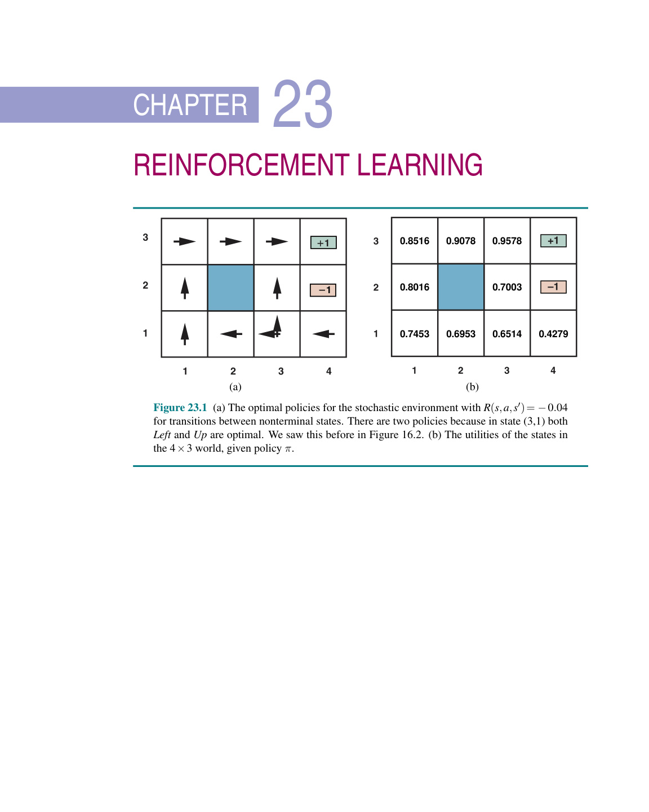
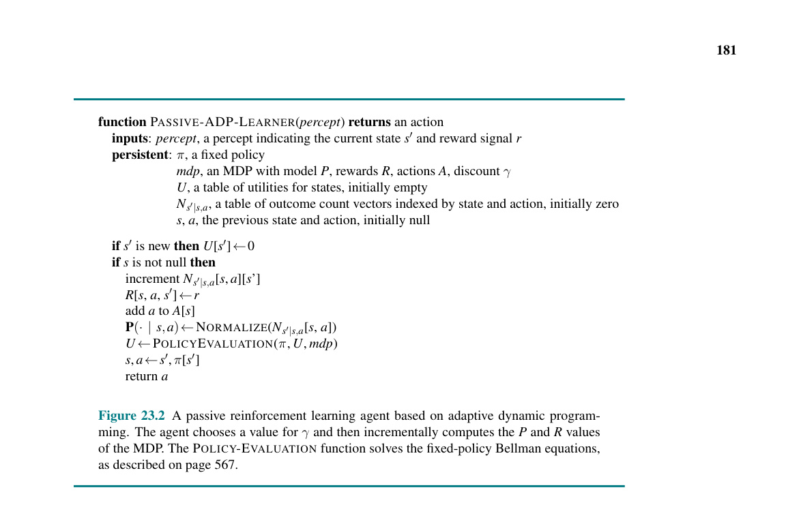
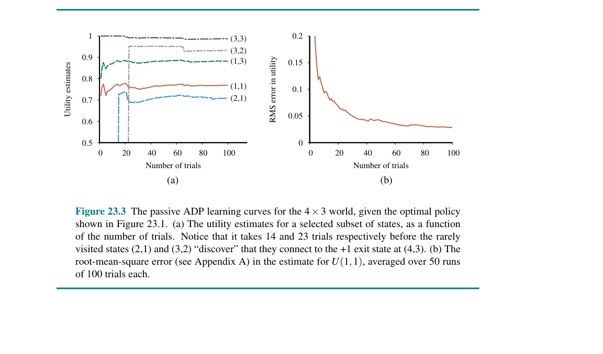
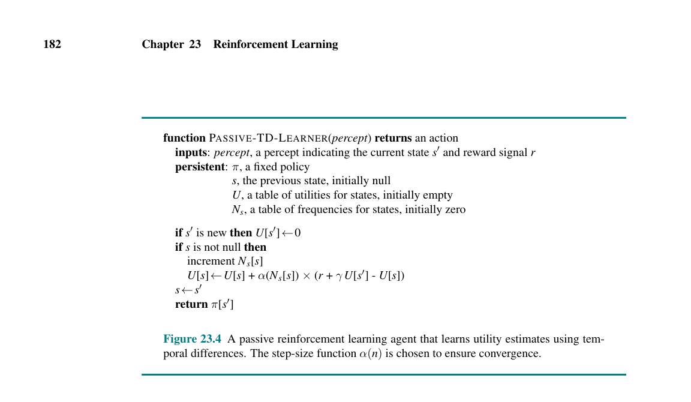
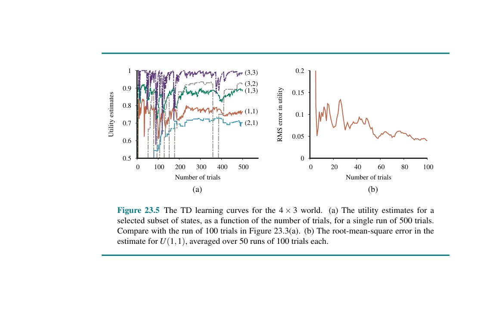
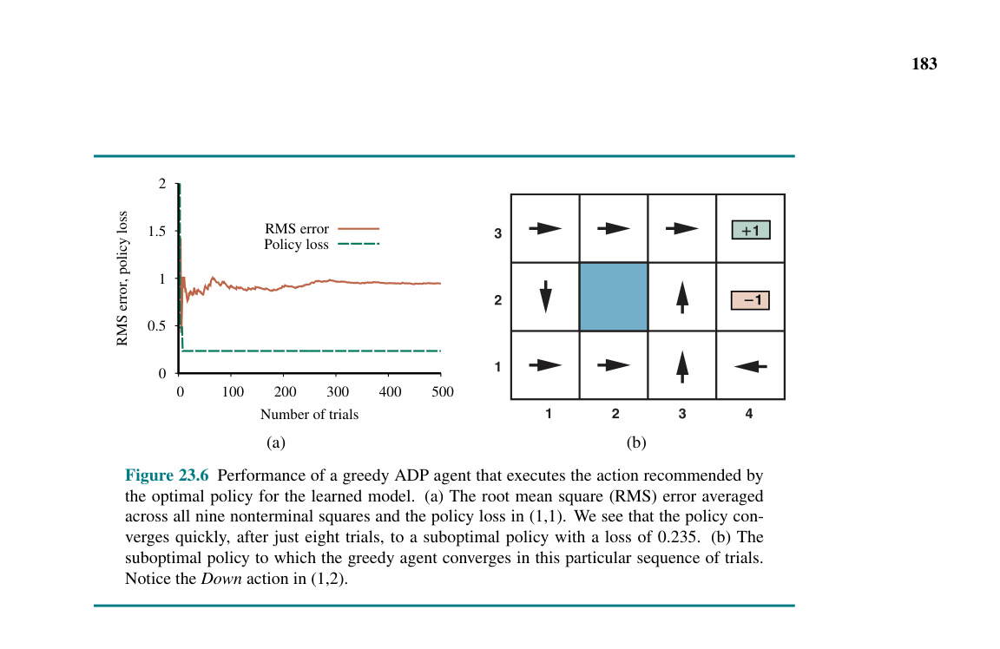
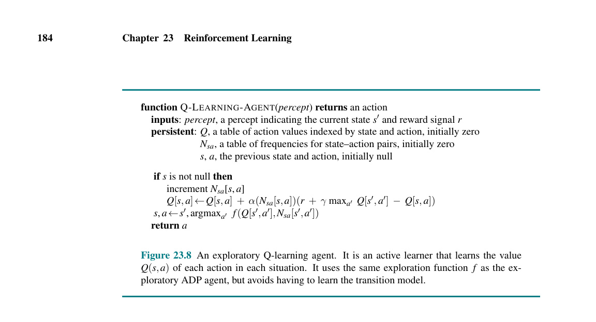
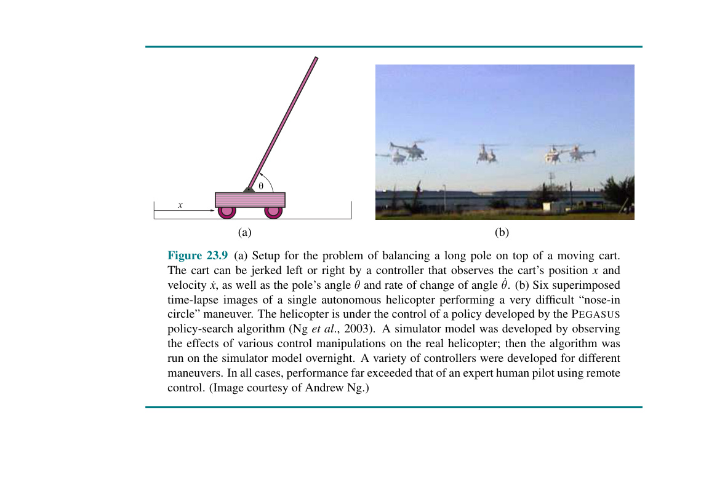

Trong đó chúng ta sẽ thấy cách mà việc trải nghiệm những phần thưởng và hình phạt có thể dạy cho một tác tử cách làm thế nào để tối đa hóa các phần thưởng trong tương lai.
Với học có giám sát (supervised learning), một tác tử học bằng cách quan sát một cách thụ động các cặp ví dụ đầu vào/đầu ra do một "người thầy" cung cấp. Trong chương này, chúng ta sẽ xem xét cách mà các tác tử có thể học một cách chủ động từ chính những kinh nghiệm của bản thân chúng, mà không cần đến người thầy, thông qua việc xem xét thành công hoặc thất bại cuối cùng của chính chúng.
Hãy xem xét bài toán học cách chơi cờ vua. Hãy tưởng tượng việc coi đây là một bài toán học có giám sát bằng cách sử dụng các phương pháp của Chương 19, 21 và 22. Hàm tác tử chơi cờ lấy đầu vào là một thế cờ (board position) trên bàn cờ và trả về một nước đi, do đó chúng ta huấn luyện hàm này bằng cách cung cấp các ví dụ về các thế cờ, mỗi ví dụ được gán nhãn với một nước đi đúng. Hiện tại, tình cờ là chúng ta có sẵn các cơ sở dữ liệu chứa vài triệu ván cờ của các đại kiện tướng, mỗi ván cờ là một chuỗi các thế cờ và các nước đi. Các nước đi được thực hiện bởi người chiến thắng, với một vài ngoại lệ, được giả định là những nước đi tốt, nếu không muốn nói là luôn hoàn hảo. Như vậy, chúng ta có một tập huấn luyện đầy hứa hẹn. Vấn đề là có tương đối ít các ví dụ (khoảng $10^8$) so với không gian của tất cả các thế cờ có thể xảy ra (khoảng $10^{40}$). Trong một ván cờ mới, người ta sẽ nhanh chóng bắt gặp những thế cờ khác biệt đáng kể so với những thế cờ có trong cơ sở dữ liệu, và hàm tác tử đã được huấn luyện có khả năng sẽ thất bại thảm hại—không chỉ bởi vì nó không có khái niệm gì về việc các nước đi của nó được cho là phải đạt được điều gì (chiếu tướng) hoặc thậm chí những nước đi đó có tác động gì đến vị trí của các quân cờ. Và dĩ nhiên cờ vua chỉ là một phần rất nhỏ bé của thế giới thực. Đối với những bài toán thực tế hơn, chúng ta sẽ cần những cơ sở dữ liệu đại kiện tướng đồ sộ hơn rất nhiều, và đơn giản là chúng không tồn tại.1
Một giải pháp thay thế là học tăng cường (reinforcement learning - RL), trong đó một tác tử tương tác với thế giới và định kỳ nhận được các phần thưởng (rewards) (hoặc, theo thuật ngữ của tâm lý học, là các củng cố (reinforcements)) phản ánh mức độ thể hiện tốt hay kém của nó. Ví dụ, trong cờ vua, phần thưởng là 1 cho việc chiến thắng, 0 cho việc thua cuộc, và $1/2$ cho một trận hòa. Chúng ta đã thấy khái niệm phần thưởng trong Chương 16 đối với các quá trình quyết định Markov (MDP). Quả thực, mục tiêu là giống nhau trong học tăng cường: tối đa hóa tổng phần thưởng kỳ vọng (expected sum of rewards). Học tăng cường khác với việc "chỉ giải quyết một MDP" bởi vì tác tử không được cung cấp MDP đó như một bài toán để giải; thay vào đó, tác tử đang ở trong MDP. Nó có thể không biết mô hình chuyển đổi (transition model) hay hàm phần thưởng (reward function), và nó phải hành động để có thể học hỏi được nhiều hơn. Hãy tưởng tượng bạn đang chơi một trò chơi mới mà bạn không biết luật; sau khoảng một trăm nước đi, trọng tài nói với bạn "Bạn thua rồi". Nói tóm lại, đó chính là học tăng cường.
Từ quan điểm của chúng ta với tư cách là những nhà thiết kế các hệ thống AI, việc cung cấp một tín hiệu phần thưởng cho tác tử thường dễ dàng hơn nhiều so với việc cung cấp các ví dụ được dán nhãn về cách hành xử. Thứ nhất, hàm phần thưởng thường (như chúng ta đã thấy đối với cờ vua) rất súc tích và dễ chỉ định: chỉ cần một vài dòng mã để báo cho tác tử chơi cờ biết rằng nó đã thắng hay thua ván cờ hoặc để báo cho tác tử đua xe biết rằng nó đã thắng hay thua cuộc đua hoặc đã gặp tai nạn. Thứ hai, chúng ta không cần phải là những chuyên gia, có khả năng cung cấp hành động chính xác trong mọi tình huống, như trường hợp chúng ta cố gắng áp dụng học có giám sát.
1 Như Yann LeCun và Alyosha Efros đã chỉ ra, "cuộc cách mạng AI sẽ không phải là học có giám sát."
Tuy nhiên, hóa ra là một chút chuyên môn cũng có thể mang lại hiệu quả rất lớn trong học tăng cường. Hai ví dụ trong đoạn văn trước—phần thưởng thắng/thua cho cờ vua và đua xe—là những gì chúng ta gọi là các phần thưởng thưa thớt (sparse rewards), bởi vì trong phần lớn các trạng thái, tác tử không hề được cung cấp bất kỳ tín hiệu phần thưởng mang tính thông tin nào cả. Trong các môn thể thao như quần vợt và cricket, chúng ta có thể dễ dàng cung cấp thêm các phần thưởng bổ sung cho mỗi điểm giành được hoặc cho mỗi lượt chạy (run) ghi được. Trong trò đua xe, chúng ta có thể thưởng cho tác tử vì đã tạo ra sự tiến bộ xung quanh đường đua theo đúng hướng. Khi học cách bò, bất kỳ chuyển động về phía trước nào cũng là một thành tựu. Những phần thưởng trung gian này làm cho việc học trở nên dễ dàng hơn rất nhiều.
Miễn là chúng ta có thể cung cấp tín hiệu phần thưởng chính xác cho tác tử, thì học tăng cường sẽ cung cấp một cách thức rất tổng quát để xây dựng các hệ thống AI. Điều này đặc biệt đúng đối với các môi trường mô phỏng, nơi không thiếu cơ hội để đúc rút kinh nghiệm. Việc bổ sung học sâu như một công cụ bên trong các hệ thống RL cũng đã tạo ra những ứng dụng mới, bao gồm việc học cách chơi các trò chơi điện tử Atari từ dữ liệu đầu vào thị giác thô (Mnih và cộng sự, 2013), điều khiển robot (Levine và cộng sự, 2016), và chơi bài poker (Brown và Sandholm, 2017).
Theo nghĩa đen, hàng trăm thuật toán học tăng cường khác nhau đã được nghĩ ra, và nhiều thuật toán trong số đó có thể sử dụng hàng loạt các phương pháp học từ các Chương 19, 21 và 22 như những công cụ hỗ trợ. Trong chương này, chúng ta sẽ đề cập đến các ý tưởng cơ bản và cung cấp một số khái niệm về sự đa dạng của các phương pháp tiếp cận thông qua một vài ví dụ. Chúng ta phân loại các phương pháp tiếp cận như sau:
2 Trong các tài liệu về RL, vốn dựa vào lĩnh vực vận trù học nhiều hơn là kinh tế học, các hàm độ thỏa dụng thường được gọi là các hàm giá trị (value functions) và được ký hiệu là $V(s)$.

Hình 23.1 (a) Các chính sách tối ưu đối với môi trường ngẫu nhiên với $R(s, a, s') = -0.04$ cho các chuyển đổi giữa các trạng thái không kết thúc. Có hai chính sách bởi vì ở trạng thái $(3,1)$, cả Left (Trái) và Up (Lên) đều tối ưu. Chúng ta đã thấy điều này trước đây trong Hình 16.2. (b) Độ thỏa dụng của các trạng thái trong thế giới $4 \times 3$, cho trước chính sách $\pi$.
Chúng ta bắt đầu trong Mục 23.2 với học tăng cường thụ động (passive reinforcement learning), trong đó chính sách của tác tử $\pi$ là cố định và nhiệm vụ là phải học độ thỏa dụng của các trạng thái (hoặc của các cặp trạng thái-hành động); việc này cũng có thể liên quan đến việc học một mô hình của môi trường. (Sự hiểu biết về các quá trình quyết định Markov, như đã được mô tả trong Chương 16, là điều bắt buộc đối với mục này.) Mục 23.3 đề cập đến học tăng cường chủ động (active reinforcement learning), trong đó tác tử cũng phải tính toán xem nên làm điều gì. Vấn đề chính ở đây là sự khám phá (exploration): một tác tử phải trải nghiệm môi trường của nó càng nhiều càng tốt để có thể học cách hành xử trong đó. Mục 23.4 thảo luận về cách mà một tác tử có thể sử dụng phương pháp học quy nạp (inductive learning) (bao gồm cả các phương pháp học sâu) để học nhanh hơn rất nhiều từ những trải nghiệm của chính nó. Chúng ta cũng thảo luận về các phương pháp tiếp cận khác có thể giúp mở rộng quy mô của RL để giải quyết các bài toán thực tế, bao gồm việc cung cấp các phần thưởng giả (pseudorewards) trung gian để hướng dẫn người học và sắp xếp hành vi thành một hệ thống phân cấp các hành động. Mục 23.5 đề cập đến các phương pháp tìm kiếm chính sách. Trong Mục 23.6, chúng ta khám phá học nghề (apprenticeship learning): huấn luyện một tác tử học thuật bằng cách sử dụng các ví dụ minh họa thay vì sử dụng các tín hiệu phần thưởng. Cuối cùng, Mục 23.7 báo cáo về các ứng dụng của học tăng cường.
Chúng ta bắt đầu với trường hợp đơn giản của một môi trường có thể quan sát hoàn toàn (fully observable) với một số lượng nhỏ các hành động và trạng thái, trong đó một tác tử đã có sẵn một chính sách cố định $\pi(s)$ quyết định các hành động của nó. Tác tử đang cố gắng học hàm độ thỏa dụng $U^{\pi}(s)$—tổng phần thưởng bị chiết khấu (discounted reward) theo kỳ vọng nếu chính sách $\pi$ được thực thi bắt đầu từ trạng thái $s$. Chúng ta gọi đây là một tác tử học thụ động (passive learning agent).
Nhiệm vụ học thụ động tương tự như nhiệm vụ đánh giá chính sách (policy evaluation), một phần của thuật toán lặp chính sách (policy iteration algorithm) được mô tả trong Mục 16.2.2. Điểm khác biệt là tác tử học thụ động không biết mô hình chuyển đổi $P(s' | s, a)$, vốn chỉ định xác suất đạt tới trạng thái $s'$ từ trạng thái $s$ sau khi thực hiện hành động $a$; nó cũng không biết hàm phần thưởng $R(s, a, s')$, vốn chỉ định phần thưởng cho mỗi lần chuyển đổi.
Chúng ta sẽ sử dụng thế giới $4 \times 3$ được giới thiệu trong Chương 16 làm ví dụ cho mình. Hình 23.1 cho thấy các chính sách tối ưu đối với thế giới đó cùng với những độ thỏa dụng tương ứng. Tác tử thực thi một tập hợp...
của các lượt thử nghiệm (trials) trong môi trường sử dụng chính sách $\pi$ của nó. Trong mỗi lượt thử nghiệm, tác tử bắt đầu ở trạng thái $(1,1)$ và trải qua một chuỗi các chuyển đổi trạng thái cho đến khi nó đạt đến một trong các trạng thái kết thúc, $(4,2)$ hoặc $(4,3)$. Các nhận thức (percepts) của nó cung cấp cả trạng thái hiện tại và phần thưởng nhận được cho sự chuyển đổi vừa xảy ra để đạt tới trạng thái đó. Các lượt thử nghiệm điển hình có thể trông như thế này:
$(1,1) \xrightarrow{-.04}_{Up} (1,2) \xrightarrow{-.04}_{Up} (1,3) \xrightarrow{-.04}_{Right} (1,2) \xrightarrow{-.04}_{Up} (1,3) \xrightarrow{-.04}_{Right} (2,3) \xrightarrow{-.04}_{Right} (3,3) \xrightarrow{+1}_{Right} (4,3)$
$(1,1) \xrightarrow{-.04}_{Up} (1,2) \xrightarrow{-.04}_{Up} (1,3) \xrightarrow{-.04}_{Right} (2,3) \xrightarrow{-.04}_{Right} (3,3) \xrightarrow{-.04}_{Right} (3,2) \xrightarrow{+1}_{Up} (3,3) \xrightarrow{+1}_{Right} (4,3)$
$(1,1) \xrightarrow{-.04}_{Up} (1,2) \xrightarrow{-.04}_{Up} (1,3) \xrightarrow{-.04}_{Right} (2,3) \xrightarrow{-.04}_{Right} (3,3) \xrightarrow{-.04}_{Right} (3,2) \xrightarrow{-1}_{Up} (4,2)$
Lưu ý rằng mỗi sự chuyển đổi đều được chú thích với cả hành động được thực hiện và phần thưởng nhận được ở trạng thái tiếp theo. Mục tiêu là sử dụng thông tin về các phần thưởng để học độ thỏa dụng kỳ vọng $U^{\pi}(s)$ liên quan đến mỗi trạng thái không kết thúc $s$. Độ thỏa dụng được định nghĩa là tổng kỳ vọng của các phần thưởng (bị chiết khấu) thu được nếu chính sách $\pi$ được tuân theo. Giống như trong Phương trình (16.2) ở trang 557, chúng ta viết
$$U^{\pi}(s) = E \left[ \sum_{t=0}^{\infty} \gamma^t R(S_t, \pi(S_t), S_{t+1}) \right], \quad (23.1)$$
trong đó $R(S_t, \pi(S_t), S_{t+1})$ là phần thưởng nhận được khi hành động $\pi(S_t)$ được thực hiện ở trạng thái $S_t$ và đạt tới trạng thái $S_{t+1}$. Lưu ý rằng $S_t$ là một biến ngẫu nhiên biểu thị trạng thái đạt tới ở thời điểm $t$ khi thực thi chính sách $\pi$, bắt đầu từ trạng thái $S_0 = s$. Chúng ta sẽ đưa vào một hệ số chiết khấu $\gamma$ trong tất cả các phương trình của mình, nhưng đối với thế giới $4 \times 3$, chúng ta sẽ đặt $\gamma = 1$, có nghĩa là không có sự chiết khấu.
Ý tưởng của việc ước lượng độ thỏa dụng trực tiếp là độ thỏa dụng của một trạng thái được định nghĩa là tổng phần thưởng kỳ vọng từ trạng thái đó trở đi (được gọi là phần thưởng mong đợi - expected reward-to-go), và mỗi lượt thử nghiệm cung cấp một mẫu của đại lượng này cho mỗi trạng thái được ghé thăm. Ví dụ, lượt thử nghiệm đầu tiên trong ba lượt thử nghiệm được hiển thị trước đó cung cấp một mẫu tổng phần thưởng là $0.76$ cho trạng thái $(1,1)$, hai mẫu là $0.80$ và $0.88$ cho $(1,2)$, hai mẫu là $0.84$ và $0.92$ cho $(1,3)$, và cứ tiếp tục như vậy. Như vậy, ở cuối mỗi chuỗi, thuật toán tính toán phần thưởng mong đợi được quan sát cho mỗi trạng thái và cập nhật độ thỏa dụng ước lượng cho trạng thái đó một cách tương ứng, chỉ bằng cách duy trì một số trung bình động (running average) cho mỗi trạng thái trong một bảng. Trong giới hạn của vô số các lượt thử nghiệm, trung bình mẫu (sample average) sẽ hội tụ về giá trị kỳ vọng thực sự trong Phương trình (23.1).
Điều này có nghĩa là chúng ta đã rút gọn học tăng cường thành một bài toán học có giám sát tiêu chuẩn trong đó mỗi ví dụ là một cặp (trạng thái, phần thưởng mong đợi). Chúng ta có rất nhiều thuật toán mạnh mẽ cho học có giám sát, do đó phương pháp tiếp cận này có vẻ đầy hứa hẹn, nhưng nó lại phớt lờ một ràng buộc quan trọng: Độ thỏa dụng của một trạng thái được xác định bởi phần thưởng và độ thỏa dụng kỳ vọng của các trạng thái kế tiếp. Cụ thể hơn, các giá trị độ thỏa dụng tuân theo các phương trình Bellman đối với một chính sách cố định (xem thêm Phương trình (16.14)):
$$U^{\pi}(s) = \sum_{s'} P(s' | s, \pi(s)) [R(s, \pi(s), s') + \gamma U^{\pi}(s')]. \quad (23.2)$$
Bằng cách bỏ qua các kết nối giữa các trạng thái, ước lượng độ thỏa dụng trực tiếp đã bỏ lỡ những cơ hội để học hỏi. Ví dụ, lượt thử nghiệm thứ hai trong số ba lượt thử nghiệm được đưa ra trước đó đã đạt tới trạng thái $(3,2)$, vốn chưa từng được ghé thăm trước đây. Quá trình chuyển đổi tiếp theo đạt tới $(3,3)$, vốn được biết từ lượt thử nghiệm đầu tiên là có độ thỏa dụng cao. Phương trình Bellman gợi ý ngay lập tức rằng $(3,2)$ cũng có khả năng có độ thỏa dụng cao, bởi vì nó dẫn đến $(3,3)$, nhưng việc ước lượng độ thỏa dụng trực tiếp lại không học được điều gì cho đến khi kết thúc lượt thử nghiệm. Nói rộng hơn, chúng ta có thể coi việc ước lượng độ thỏa dụng trực tiếp như quá trình tìm kiếm $U$ trong một không gian giả thuyết lớn hơn nhiều so với mức cần thiết, ở chỗ nó bao gồm nhiều hàm vi phạm các phương trình Bellman. Vì lý do này, thuật toán thường hội tụ rất chậm.
Một tác tử quy hoạch động thích ứng (adaptive dynamic programming - ADP) tận dụng các ràng buộc giữa các độ thỏa dụng của các trạng thái bằng cách học mô hình chuyển đổi kết nối chúng và giải quyết quá trình quyết định Markov tương ứng bằng cách sử dụng quy hoạch động. Đối với một tác tử học thụ động, điều này có nghĩa là cắm mô hình chuyển đổi đã học được $P(s' | s, \pi(s))$ và các phần thưởng đã quan sát được $R(s, \pi(s), s')$ vào Phương trình (23.2) để tính toán độ thỏa dụng của các trạng thái. Như chúng tôi đã nhận xét trong phần thảo luận về quá trình lặp chính sách trong Chương 16, các phương trình Bellman này có dạng tuyến tính khi chính sách $\pi$ là cố định, do đó chúng có thể được giải bằng bất kỳ gói đại số tuyến tính nào.
Ngoài ra, chúng ta có thể áp dụng phương pháp lặp chính sách được sửa đổi (xem trang 568), sử dụng một quá trình lặp giá trị đơn giản hóa để cập nhật các ước lượng độ thỏa dụng sau mỗi thay đổi đối với mô hình đã học. Bởi vì mô hình thường chỉ thay đổi đôi chút theo mỗi lần quan sát, quá trình lặp giá trị có thể sử dụng các ước lượng độ thỏa dụng trước đó làm các giá trị ban đầu và điển hình là sẽ hội tụ rất nhanh.
Việc học mô hình chuyển đổi là rất dễ dàng, bởi vì môi trường có thể quan sát hoàn toàn. Điều này có nghĩa là chúng ta có một tác vụ học có giám sát trong đó đầu vào cho mỗi ví dụ huấn luyện là một cặp trạng thái–hành động, $(s, a)$, và đầu ra là trạng thái kết quả, $s'$. Mô hình chuyển đổi $P(s' | s, a)$ được biểu diễn dưới dạng một bảng và nó được ước lượng trực tiếp từ các số đếm được tích lũy trong $N_{s' | s, a}$. Các số đếm ghi lại tần suất đạt đến trạng thái $s'$ khi thực thi hành động $a$ ở trạng thái $s$. Ví dụ, trong ba lượt thử nghiệm được đưa ra ở trang 843, Right được thực thi bốn lần ở trạng thái $(3,3)$ và trạng thái kết quả là $(3,2)$ hai lần và $(4,3)$ hai lần, vì vậy cả $P((3,2) | (3,3), Right)$ và $P((4,3) | (3,3), Right)$ đều được ước lượng là $1/2$.
Chương trình tác tử đầy đủ cho một tác tử ADP thụ động được hiển thị trong Hình 23.2. Hiệu suất của nó trên thế giới $4 \times 3$ được hiển thị trong Hình 23.3. Xét về khía cạnh các ước lượng giá trị của nó cải thiện nhanh như thế nào, tác tử ADP chỉ bị giới hạn bởi khả năng học mô hình chuyển đổi của nó. Theo nghĩa này, nó cung cấp một tiêu chuẩn (standard) để dựa vào đó chúng ta có thể đo lường bất kỳ thuật toán học tăng cường nào khác. Tuy nhiên, nó là bất khả thi đối với các không gian trạng thái khổng lồ. Ví dụ, trong trò cờ súc sắc (backgammon), nó sẽ liên quan đến việc giải quyết khoảng $10^{20}$ phương trình với $10^{20}$ ẩn số.
Việc giải quyết MDP cơ sở (underlying MDP) như trong mục trước không phải là cách duy nhất để đưa các phương trình Bellman vào ứng dụng cho bài toán học. Một cách khác là sử dụng các quá trình chuyển đổi quan sát được để điều chỉnh độ thỏa dụng của các trạng thái được quan sát sao cho chúng thống nhất với các phương trình ràng buộc. Ví dụ, hãy xem xét sự chuyển đổi từ $(1,3)$ sang $(2,3)$ trong lượt thử nghiệm thứ hai ở trang 843. Giả sử rằng do kết quả của lượt thử nghiệm đầu tiên, các ước lượng độ thỏa dụng là $U^{\pi}(1,3) = 0.88$ và $U^{\pi}(2,3) = 0.96$. Giờ đây, nếu sự chuyển đổi từ $(1,3)$ sang $(2,3)$ này luôn luôn xảy ra, chúng ta sẽ kỳ vọng độ thỏa dụng tuân theo phương trình
$$U^{\pi}(1,3) = -0.04 + U^{\pi}(2,3),$$
nên $U^{\pi}(1,3)$ sẽ là $0.92$. Do đó, ước lượng hiện tại của nó là $0.88$ có thể là hơi thấp và cần được tăng lên. Về mặt tổng quát hơn, khi một quá trình chuyển đổi xảy ra từ trạng thái $s$ sang trạng thái $s'$ thông qua hành động $\pi(s)$,
function PASSIVE-ADP-LEARNER(percept) returns an action
inputs: percept, a percept indicating the current state s' and reward signal r'
persistent: $\pi$, a fixed policy
mdp, an MDP with model P, rewards R, actions A, discount $\gamma$
U, a table of utilities for states, initially empty
$N_{s' | s, a}$, a table of outcome count vectors indexed by state and action, initially zero
s, a, the previous state and action, initially null
if s' is new then U[s'] $\leftarrow$ 0
if s is not null then
increment $N_{s' | s, a}[s, a][s']$
R[s, a, s'] $\leftarrow$ r'
add a to A[s]
P(. | s, a) $\leftarrow$ NORMALIZE($N_{s' | s, a}[s, a]$)
U $\leftarrow$ POLICY-EVALUATION($\pi$, U, mdp)
s, a $\leftarrow$ s', $\pi$[s']
return a

Hình 23.2 Một tác tử học tăng cường thụ động dựa trên quy hoạch động thích ứng. Tác tử chọn một giá trị cho $\gamma$ và sau đó tính toán tuần tự các giá trị $P$ và $R$ của MDP. Hàm POLICY-EVALUATION giải quyết các phương trình Bellman có chính sách cố định, như được mô tả ở trang 567.

Hình 23.3 Các đường cong học thuật (learning curves) ADP thụ động cho thế giới $4 \times 3$, cho trước chính sách tối ưu được thể hiện trong Hình 23.1. (a) Các ước lượng độ thỏa dụng cho một tập con các trạng thái được chọn, dưới dạng một hàm số theo số lượng các lượt thử nghiệm. Lưu ý rằng phải mất tương ứng 14 và 23 lượt thử nghiệm trước khi các trạng thái hiếm khi được ghé thăm là $(2,1)$ và $(3,2)$ "phát hiện ra" rằng chúng kết nối với trạng thái thoát hiểm $+1$ tại $(4,3)$. (b) Sai số bình phương trung bình gốc (root-mean-square error) (xem Phụ lục A) trong ước lượng cho $U(1,1)$, được lấy trung bình qua 50 lần chạy của 100 lượt thử nghiệm mỗi lần.
function PASSIVE-TD-LEARNER(percept) returns an action
inputs: percept, a percept indicating the current state s' and reward signal r'
persistent: $\pi$, a fixed policy
s, the previous state, initially null
U, a table of utilities for states, initially empty
$N_s$, a table of frequencies for states, initially zero
if s' is new then U[s'] $\leftarrow$ 0
if s is not null then
increment $N_s$[s]
U[s] $\leftarrow$ U[s] + $\alpha(N_s[s])(r + \gamma U[s'] - U[s])$
s $\leftarrow$ s'
return $\pi$[s']

Hình 23.4 Một tác tử học tăng cường thụ động thực hiện học các ước lượng độ thỏa dụng sử dụng chênh lệch thời gian. Hàm kích thước bước (step-size function) $\alpha(n)$ được chọn để đảm bảo sự hội tụ.
chúng ta áp dụng bản cập nhật sau đây cho $U^{\pi}(s)$:
$$U^{\pi}(s) \leftarrow U^{\pi}(s) + \alpha \left[ R(s, \pi(s), s') + \gamma U^{\pi}(s') - U^{\pi}(s) \right]. \quad (23.3)$$
Ở đây, $\alpha$ là tham số tỷ lệ học (learning rate parameter). Bởi vì quy tắc cập nhật này sử dụng sự chênh lệch về độ thỏa dụng giữa các trạng thái kế tiếp nhau (và do đó là các khoảng thời gian kế tiếp nhau), nên nó thường được gọi là phương trình chênh lệch thời gian (temporal-difference - TD). Giống như trong các quy tắc cập nhật trọng số từ Chương 19 (ví dụ, Phương trình (19.6) ở trang 698), số hạng TD $R(s, \pi(s), s') + \gamma U^{\pi}(s') - U^{\pi}(s)$ thực chất là một tín hiệu lỗi (error signal), và việc cập nhật là nhằm mục đích giảm thiểu lỗi này.
Tất cả các phương pháp chênh lệch thời gian đều hoạt động bằng cách điều chỉnh các ước lượng độ thỏa dụng hướng tới trạng thái cân bằng lý tưởng vốn được duy trì một cách cục bộ khi các ước lượng độ thỏa dụng là chính xác. Trong trường hợp học thụ động, trạng thái cân bằng được cho bởi Phương trình (23.2). Giờ đây, Phương trình (23.3) trên thực tế có khiến tác tử đạt được trạng thái cân bằng được cho bởi Phương trình (23.2), nhưng có một chút tế nhị ở đây. Đầu tiên, hãy lưu ý rằng bản cập nhật chỉ liên quan đến trạng thái kế tiếp quan sát được $s'$, trong khi các điều kiện cân bằng thực tế liên quan đến tất cả các trạng thái tiếp theo có thể có. Người ta có thể nghĩ rằng điều này gây ra một sự thay đổi lớn một cách không phù hợp trong $U^{\pi}(s)$ khi một sự chuyển đổi rất hiếm xảy ra; nhưng, trên thực tế, bởi vì các chuyển đổi hiếm chỉ hiếm khi xảy ra, giá trị trung bình của $U^{\pi}(s)$ sẽ hội tụ về đại lượng chính xác trong giới hạn, ngay cả khi bản thân giá trị đó tiếp tục dao động.
Hơn thế nữa, nếu chúng ta biến tham số $\alpha$ thành một hàm giảm dần khi số lần một trạng thái được ghé thăm tăng lên, như được hiển thị trong Hình 23.4, thì bản thân $U^{\pi}(s)$ sẽ hội tụ về giá trị chính xác.3 Hình 23.5 minh họa hiệu suất của tác tử TD thụ động trên thế giới $4 \times 3$. Nó học không nhanh bằng tác tử ADP và cho thấy mức độ biến động (variability) cao hơn nhiều, nhưng nó đơn giản hơn rất nhiều và đòi hỏi ít phép tính hơn trên mỗi lần quan sát. Lưu ý rằng TD không cần một mô hình chuyển đổi để thực hiện các bản cập nhật của mình. Chính bản thân môi trường đã cung cấp sự kết nối giữa các trạng thái lân cận dưới dạng các sự chuyển đổi quan sát được.
Các phương pháp tiếp cận ADP và TD có quan hệ chặt chẽ với nhau. Cả hai đều cố gắng thực hiện các điều chỉnh cục bộ đối với các ước lượng độ thỏa dụng nhằm làm cho mỗi trạng thái "đồng thuận" với các trạng thái kế tiếp của nó. Một điểm khác biệt là
3 Các điều kiện kỹ thuật được đưa ra ở trang 702. Trong Hình 23.5, chúng ta đã sử dụng $\alpha(n) = 60/(59+n)$, vốn thỏa mãn các điều kiện.

Hình 23.5 Các đường cong học thuật TD cho thế giới $4 \times 3$. (a) Các ước lượng độ thỏa dụng cho một tập con các trạng thái được chọn, dưới dạng một hàm số theo số lượng các lượt thử nghiệm, cho một lần chạy duy nhất gồm 500 lượt thử nghiệm. Hãy so sánh với lần chạy 100 lượt thử nghiệm trong Hình 23.3(a). (b) Sai số bình phương trung bình gốc trong ước lượng cho $U(1,1)$, được lấy trung bình qua 50 lần chạy của 100 lượt thử nghiệm mỗi lần.
TD điều chỉnh một trạng thái để đồng thuận với trạng thái kế tiếp được quan sát của nó (Phương trình (23.3)), trong khi ADP điều chỉnh trạng thái để đồng thuận với tất cả các trạng thái kế tiếp có thể xảy ra, được tính trọng số bởi các xác suất của chúng (Phương trình (23.2)). Điểm khác biệt này biến mất khi các tác động của các điều chỉnh TD được lấy trung bình qua một số lượng lớn các sự chuyển đổi, bởi vì tần suất của mỗi trạng thái kế tiếp trong tập hợp các sự chuyển đổi xấp xỉ tỷ lệ thuận với xác suất của nó. Một điểm khác biệt quan trọng hơn là trong khi TD thực hiện một điều chỉnh duy nhất cho mỗi quá trình chuyển đổi quan sát được, thì ADP thực hiện bao nhiêu điều chỉnh tùy thích để khôi phục sự nhất quán giữa các ước lượng độ thỏa dụng $U$ và mô hình chuyển đổi $P$. Mặc dù quá trình chuyển đổi quan sát được chỉ tạo ra một sự thay đổi cục bộ trong $P$, tác động của nó có thể cần phải được lan truyền trong toàn bộ $U$. Do đó, TD có thể được xem như một sự xấp xỉ ban đầu tuy thô sơ nhưng hiệu quả đối với ADP.
Mỗi điều chỉnh do ADP thực hiện có thể được xem, từ quan điểm của TD, như là kết quả của một trải nghiệm giả (pseudoexperience) được tạo ra bằng cách mô phỏng mô hình chuyển đổi hiện tại. Có thể mở rộng phương pháp tiếp cận TD để sử dụng một mô hình chuyển đổi nhằm tạo ra một vài trải nghiệm giả—những sự chuyển đổi mà tác tử TD có thể tưởng tượng là có thể xảy ra, dựa trên mô hình hiện tại của nó. Đối với mỗi sự chuyển đổi quan sát được, tác tử TD có thể tạo ra một số lượng lớn các sự chuyển đổi tưởng tượng. Theo cách này, các ước lượng độ thỏa dụng thu được sẽ xấp xỉ ngày càng gần hơn so với các ước lượng của ADP—tất nhiên là với cái giá phải trả là thời gian tính toán gia tăng.
Theo một hướng tương tự, chúng ta có thể tạo ra các phiên bản hiệu quả hơn của ADP bằng cách xấp xỉ trực tiếp các thuật toán cho quá trình lặp giá trị (value iteration) hoặc lặp chính sách (policy iteration). Mặc dù thuật toán lặp giá trị rất hiệu quả, nó vẫn là bất khả thi nếu chúng ta có, giả sử, $10^{100}$ trạng thái. Tuy nhiên, nhiều điều chỉnh cần thiết đối với các giá trị trạng thái trên mỗi vòng lặp sẽ vô cùng nhỏ. Một phương pháp tiếp cận khả thi để tạo ra các câu trả lời khá tốt một cách nhanh chóng là giới hạn số lượng các điều chỉnh được thực hiện sau mỗi sự chuyển đổi quan sát được. Người ta cũng có thể sử dụng một phương pháp heuristic để xếp hạng các điều chỉnh có thể có nhằm chỉ thực hiện những điều chỉnh có ý nghĩa nhất. Phương pháp heuristic quét ưu tiên (prioritized sweeping) ưu tiên thực hiện các điều chỉnh đối với những trạng thái mà các trạng thái kế tiếp có khả năng xảy ra của chúng vừa trải qua một sự điều chỉnh lớn trong các ước lượng độ thỏa dụng của riêng chúng.
Sử dụng các phương pháp heuristic như thế này, các thuật toán ADP xấp xỉ có thể học với tốc độ gần bằng ADP đầy đủ, tính theo số lượng các chuỗi huấn luyện, nhưng có thể hiệu quả hơn nhiều bậc độ lớn tính theo tổng lượng tính toán (xem Bài tập 23.PRSW). Điều này cho phép chúng xử lý các không gian trạng thái quá lớn so với ADP đầy đủ. Các thuật toán ADP xấp xỉ có thêm một lợi thế nữa: trong những giai đoạn đầu khi học về một môi trường mới, mô hình chuyển đổi $P$ thường sẽ khác xa so với thực tế, nên việc tính toán một hàm độ thỏa dụng chính xác để khớp với nó là không có nhiều ý nghĩa. Một thuật toán xấp xỉ có thể sử dụng kích thước điều chỉnh tối thiểu sẽ giảm dần khi mô hình chuyển đổi trở nên chính xác hơn. Điều này loại bỏ các chuỗi lặp giá trị rất dài có thể xảy ra ở giai đoạn đầu của quá trình học do những thay đổi lớn trong mô hình.
Một tác tử học thụ động có một chính sách cố định quyết định hành vi của nó. Một tác tử học chủ động phải tự quyết định những hành động cần thực hiện. Hãy bắt đầu với tác tử quy hoạch động thích ứng (ADP) và xem xét cách nó có thể được sửa đổi để tận dụng quyền tự do mới này.
Trước tiên, tác tử sẽ cần phải học một mô hình chuyển đổi hoàn chỉnh với các xác suất kết quả cho tất cả các hành động, thay vì chỉ là mô hình cho chính sách cố định. Cơ chế học được sử dụng bởi PASSIVE-ADP-AGENT sẽ hoàn thành tốt việc này. Tiếp theo, chúng ta cần tính đến việc tác tử có sự lựa chọn về các hành động. Những độ thỏa dụng mà nó cần phải học là những độ thỏa dụng được định nghĩa bởi chính sách tối ưu; chúng tuân theo các phương trình Bellman (mà chúng ta lặp lại ở đây):
$$U(s) = \max_{a \in A(s)} \sum_{s'} P(s' | s, a) [R(s, a, s') + \gamma U(s')]. \quad (23.4)$$
Những phương trình này có thể được giải để thu được hàm độ thỏa dụng $U$ bằng cách sử dụng các thuật toán lặp giá trị hoặc lặp chính sách từ Chương 16.
Vấn đề cuối cùng là phải làm gì ở mỗi bước. Sau khi thu được một hàm độ thỏa dụng $U$ tối ưu cho mô hình đã học được, tác tử có thể trích xuất một hành động tối ưu bằng cách nhìn trước một bước (one-step look-ahead) để tối đa hóa độ thỏa dụng kỳ vọng; thay vào đó, nếu nó sử dụng lặp chính sách, chính sách tối ưu đã có sẵn, vì vậy nó có thể chỉ cần thực thi hành động mà chính sách tối ưu khuyến nghị. Nhưng nó có nên làm như vậy không?
Hình 23.6 cho thấy kết quả của một chuỗi các lượt thử nghiệm dành cho một tác tử ADP luôn tuân theo khuyến nghị của chính sách tối ưu cho mô hình đã học được ở mỗi bước. Tác tử này không học được các độ thỏa dụng thực sự hay chính sách tối ưu thực sự! Thay vào đó, điều xảy ra là ở lượt thử nghiệm thứ ba, nó tìm thấy một chính sách để đạt tới phần thưởng $+1$ dọc theo tuyến đường bên dưới thông qua $(2,1)$, $(3,1)$, $(3,2)$, và $(3,3)$. (Xem Hình 23.6(b).) Sau khi thử nghiệm với các biến thể nhỏ, từ lượt thử nghiệm thứ tám trở đi, nó tuân thủ nghiêm ngặt chính sách đó, không bao giờ tìm hiểu độ thỏa dụng của các trạng thái khác và không bao giờ tìm ra tuyến đường tối ưu thông qua $(1,2)$, $(1,3)$, và $(2,3)$. Chúng ta sẽ gọi tác tử này là một tác tử tham lam (greedy agent), bởi vì ở mỗi bước nó tham lam thực hiện hành động mà nó hiện đang tin là tối ưu. Đôi khi sự tham lam được đền đáp và tác tử hội tụ về chính sách tối ưu, nhưng thông thường thì không.
Làm sao việc lựa chọn hành động tối ưu lại có thể dẫn đến những kết quả dưới mức tối ưu (suboptimal results)? Câu trả lời là mô hình đã học được không giống với môi trường thực sự; do đó, những gì tối ưu trong mô hình đã học có thể là dưới mức tối ưu trong môi trường thực sự. Thật không may, tác tử không biết môi trường thực sự là gì, vì vậy nó không thể tính toán hành động tối ưu cho môi trường thực sự. Vậy thì, nó nên làm gì?

Hình 23.6 Hiệu suất của một tác tử ADP tham lam (greedy) thực thi hành động được khuyến nghị bởi chính sách tối ưu đối với mô hình đã học được. (a) Sai số bình phương trung bình gốc (RMS) được lấy trung bình trên tất cả chín ô vuông không kết thúc và tổn thất chính sách (policy loss) tại $(1,1)$. Chúng ta thấy rằng chính sách hội tụ nhanh chóng, chỉ sau tám lượt thử nghiệm, thành một chính sách dưới mức tối ưu với tổn thất là $0.235$. (b) Chính sách dưới mức tối ưu mà tác tử tham lam hội tụ đến trong chuỗi các lượt thử nghiệm cụ thể này. Hãy chú ý đến hành động Down (Xuống) ở $(1,2)$.
Tác tử tham lam đã bỏ qua một thực tế là các hành động không chỉ cung cấp phần thưởng; chúng còn cung cấp thông tin dưới dạng các nhận thức ở các trạng thái kết quả. Như chúng ta đã thấy với các bài toán máy đánh bạc (bandit problems) trong Mục 16.3, một tác tử phải tạo ra sự đánh đổi giữa việc khai thác (exploitation) hành động tốt nhất hiện tại để tối đa hóa phần thưởng ngắn hạn của nó và việc khám phá (exploration) các trạng thái chưa từng được biết đến để thu thập thông tin có thể dẫn đến sự thay đổi trong chính sách (và đạt được phần thưởng lớn hơn trong tương lai). Trong thế giới thực, người ta liên tục phải đưa ra quyết định giữa việc tiếp tục một cuộc sống thoải mái hiện tại với việc dấn thân vào những điều chưa biết với hy vọng có được một cuộc sống tốt đẹp hơn.
Mặc dù các bài toán máy đánh bạc rất khó giải quyết một cách chính xác để thu được một kế hoạch khám phá tối ưu, nhưng vẫn có thể nghĩ ra một kế hoạch mà cuối cùng sẽ phát hiện ra một chính sách tối ưu, ngay cả khi có thể phải mất thời gian lâu hơn so với mức tối ưu. Bất kỳ kế hoạch nào như vậy cũng không nên tham lam đối với nước đi tiếp theo ngay lập tức, mà phải là cái được gọi là "tham lam trong giới hạn của sự khám phá vô hạn" (greedy in the limit of infinite exploration), hay GLIE. Một kế hoạch GLIE phải thử mỗi hành động ở mỗi trạng thái với số lần không bị giới hạn nhằm tránh việc có một xác suất hữu hạn rằng một hành động tối ưu bị bỏ lỡ. Một tác tử ADP sử dụng một kế hoạch như vậy cuối cùng sẽ học được mô hình chuyển đổi thực sự, và sau đó có thể hoạt động dưới hình thức khai thác.
Có một vài kế hoạch GLIE; một trong những kế hoạch đơn giản nhất là yêu cầu tác tử chọn một hành động ngẫu nhiên ở bước thời gian $t$ với xác suất $1/t$ và tuân theo chính sách tham lam trong những trường hợp còn lại. Mặc dù cuối cùng nó cũng hội tụ về một chính sách tối ưu, nhưng quá trình này có thể chậm. Một phương pháp tiếp cận tốt hơn sẽ gán một số trọng số cho các hành động mà tác tử chưa từng thử nhiều lần, trong khi có xu hướng tránh các hành động được cho là có độ thỏa dụng thấp (giống như chúng ta đã làm với phương pháp tìm kiếm trên cây Monte Carlo trong Mục 6.4). Điều này có thể được thực hiện bằng cách thay đổi phương trình ràng buộc (23.4) sao cho nó gán một ước lượng độ thỏa dụng cao hơn cho các cặp trạng thái-hành động tương đối ít được khám phá.
Điều này tương đương với một tiên nghiệm lạc quan (optimistic prior) đối với các môi trường có thể có và khiến tác tử ban đầu hành xử như thể có những phần thưởng tuyệt vời rải rác ở khắp mọi nơi. Hãy sử dụng $U^+(s)$ để biểu thị ước lượng lạc quan về độ thỏa dụng (nghĩa là, phần thưởng mong đợi) của trạng thái $s$, và gọi $N(s,a)$ là số lần hành động $a$ đã được thử ở trạng thái $s$. Giả sử chúng ta đang sử dụng thuật toán lặp giá trị (value iteration) trong một tác tử học ADP; thì chúng ta cần viết lại phương trình cập nhật (Phương trình (16.10) ở trang 563) để kết hợp thêm ước lượng lạc quan này:
$$U^+(s) \leftarrow \max_a f \left( \sum_{s'} P(s' | s, a) [R(s, a, s') + \gamma U^+(s')], N(s,a) \right). \quad (23.5)$$
Ở đây, $f$ là hàm khám phá (exploration function). Hàm $f(u,n)$ xác định sự tham lam (sự ưu tiên đối với các giá trị cao của độ thỏa dụng $u$) được đánh đổi như thế nào với sự tò mò (sự ưu tiên đối với các hành động chưa được thử thường xuyên và có số đếm $n$ thấp). Hàm này nên đồng biến theo $u$ và nghịch biến theo $n$. Rõ ràng, có nhiều hàm khả thi phù hợp với các điều kiện này. Một định nghĩa đặc biệt đơn giản là
$$ f(u, n) = \begin{cases} R^+ & \text{nếu } n < N_e \\ u & \text{nếu không}, \end{cases} $$
trong đó $R^+$ là một ước lượng lạc quan về phần thưởng tốt nhất có thể nhận được ở bất kỳ trạng thái nào và $N_e$ là một tham số cố định. Điều này sẽ có tác dụng làm cho tác tử phải thử mỗi cặp trạng thái-hành động ít nhất $N_e$ lần. Việc $U^+$ chứ không phải $U$ xuất hiện ở vế phải của Phương trình (23.5) là rất quan trọng. Khi quá trình khám phá diễn ra, các trạng thái và các hành động ở gần trạng thái bắt đầu có thể sẽ được thử một số lượng lớn lần. Nếu chúng ta sử dụng $U$, một ước lượng độ thỏa dụng bi quan hơn, thì tác tử sẽ sớm trở nên miễn cưỡng khám phá các khu vực xa hơn. Việc sử dụng $U^+$ có nghĩa là những lợi ích của quá trình khám phá được lan truyền ngược lại từ rìa của các khu vực chưa được khám phá, do đó những hành động dẫn tới các khu vực chưa được khám phá sẽ được gán trọng số cao hơn, thay vì chỉ là những hành động mà bản thân chúng là không quen thuộc đối với tác tử.
Hiệu quả của chính sách khám phá này có thể được nhìn thấy rõ ràng trong Hình 23.7(b), cho thấy sự hội tụ nhanh chóng hướng về mức tổn thất chính sách bằng không, không giống như với phương pháp tiếp cận tham lam. Một chính sách gần như hoàn toàn tối ưu được tìm thấy chỉ sau 18 lượt thử nghiệm. Lưu ý rằng sai số RMS trong các ước lượng độ thỏa dụng không hội tụ nhanh như vậy. Đó là bởi vì tác tử đã sớm ngừng khám phá các phần không có tính tưởng thưởng của không gian trạng thái, sau đó nó chỉ ghé thăm chúng "do tình cờ" mà thôi. Tuy nhiên, việc tác tử không quan tâm đến độ thỏa dụng chính xác của các trạng thái mà nó biết là không mong muốn và có thể tránh được là hoàn toàn hợp lý. Việc tìm hiểu về đài phát thanh hay nhất để nghe trong khi bị rơi xuống vách đá thực sự là không có nhiều ý nghĩa.
Cho đến nay, chúng ta đã giả định rằng một tác tử được tự do khám phá theo ý muốn—rằng bất kỳ phần thưởng âm nào cũng chỉ nhằm cải thiện mô hình của nó về thế giới. Tức là, nếu chúng ta chơi một ván cờ và bị thua, chúng ta sẽ không phải gánh chịu thiệt hại nào (ngoại trừ có lẽ là lòng tự ái của chúng ta), và bất cứ điều gì chúng ta học được sẽ làm cho chúng ta trở thành một người chơi giỏi hơn trong ván tiếp theo. Tương tự, trong một môi trường mô phỏng dành cho ô tô tự lái, chúng ta có thể khám phá những giới hạn về hiệu suất của chiếc xe, và bất kỳ tai nạn nào cũng đều cung cấp thêm thông tin cho chúng ta. Nếu chiếc xe đâm sầm vào đâu đó, chúng ta chỉ cần nhấn nút khởi động lại (reset).
Đáng buồn thay, thế giới thực ít khoan dung hơn thế. Nếu bạn là một chú cá mặt trời (sunfish) sơ sinh, xác suất sống sót đến tuổi trưởng thành của bạn là khoảng $0.00000001$. Nhiều hành động là không thể đảo ngược (irreversible), theo nghĩa được định nghĩa cho các tác tử tìm kiếm trực tuyến trong Mục 4.5: không có một chuỗi hành động nào tiếp theo sau đó có thể khôi phục trạng thái về nguyên trạng trước khi hành động không thể đảo ngược đó được thực hiện. Trong trường hợp tồi tệ nhất, tác tử rơi vào một trạng thái bị hấp thụ (absorbing state), nơi không có bất kỳ hành động nào có bất kỳ tác dụng nào và cũng không có phần thưởng nào được nhận. Trong nhiều môi trường thực tế, chúng ta không thể để các tác tử của mình thực hiện những hành động không thể đảo ngược hoặc rơi vào các trạng thái bị hấp thụ. Ví dụ, một tác tử học lái xe trên một chiếc ô tô thực tế nên tránh các hành động có thể dẫn đến bất kỳ tình huống nào sau đây:
Chúng ta có thể kết thúc trong một trạng thái tồi tệ vì mô hình của chúng ta là chưa biết (unknown) và chúng ta chủ động lựa chọn khám phá theo một hướng mà hóa ra lại tồi tệ, hoặc vì mô hình của chúng ta là không chính xác (incorrect) và chúng ta không biết rằng một hành động nhất định có thể mang lại một kết quả thảm khốc. Lưu ý rằng thuật toán trong Hình 23.2 đang sử dụng phương pháp ước lượng hợp lý cực đại (maximum-likelihood estimation) (xem Chương 21) để học mô hình chuyển đổi; hơn thế nữa, bằng cách lựa chọn một chính sách chỉ dựa hoàn toàn vào mô hình được ước lượng, nó đang hành xử như thể mô hình đó là chính xác. Đây không hẳn là một ý tưởng hay! Ví dụ, một tác tử lái taxi không biết cách hoạt động của đèn giao thông có thể bỏ qua đèn đỏ một hoặc hai lần mà không gây ra hậu quả xấu nào và sau đó hình thành một chính sách là sẽ phớt lờ tất cả các đèn đỏ kể từ thời điểm đó trở đi.
Một ý tưởng tốt hơn sẽ là lựa chọn một chính sách hoạt động khá tốt trên toàn bộ phạm vi các mô hình có cơ hội hợp lý để trở thành mô hình thực sự, ngay cả khi chính sách đó tình cờ là dưới mức tối ưu đối với mô hình hợp lý cực đại. Có ba phương pháp tiếp cận toán học có đặc điểm này.
Phương pháp tiếp cận đầu tiên, học tăng cường Bayes (Bayesian reinforcement learning), giả định một xác suất tiên nghiệm $P(h)$ đối với các giả thuyết $h$ về việc mô hình thực sự là gì; xác suất hậu nghiệm $P(h|e)$ thu được theo cách thông thường bằng định lý Bayes dựa trên các quan sát cho đến thời điểm hiện tại. Sau đó, nếu tác tử đã quyết định ngừng học hỏi, chính sách tối ưu là chính sách mang lại độ thỏa dụng kỳ vọng cao nhất. Cho $U_h^{\pi}$ là độ thỏa dụng kỳ vọng, được lấy trung bình trên tất cả các trạng thái khởi đầu có thể có, thu được bằng cách thực thi chính sách $\pi$ trong mô hình $h$. Sau đó, chúng ta có
$$\pi^* = \arg\max_{\pi} \sum_h P(h | e) U_h^{\pi}.$$
Trong một vài trường hợp đặc biệt, chính sách này thậm chí có thể được tính toán! Tuy nhiên, nếu tác tử sẽ tiếp tục học trong tương lai, thì việc tìm ra một chính sách tối ưu trở nên khó khăn hơn đáng kể.
bởi vì tác tử phải xem xét tác động của các quan sát trong tương lai đối với niềm tin của nó về mô hình chuyển đổi. Bài toán trở thành một POMDP khám phá (exploration POMDP) mà trong đó các trạng thái niềm tin là các phân phối trên các mô hình. Về nguyên tắc, POMDP khám phá này có thể được hình thành và giải quyết trước khi tác tử thực sự đặt chân vào thế giới. (Bài tập 23.EPOM yêu cầu bạn thực hiện điều này đối với trò chơi Dò mìn (Minesweeper) để tìm ra nước đi đầu tiên tốt nhất.) Kết quả là một chiến lược hoàn chỉnh cho tác tử biết phải làm gì tiếp theo đối với mọi chuỗi nhận thức có thể xảy ra. Việc giải quyết POMDP khám phá thường là bất khả thi một cách dữ dội (wildly intractable), nhưng khái niệm này cung cấp một nền tảng phân tích để hiểu bài toán khám phá được mô tả trong Mục 23.3.
Cần lưu ý rằng việc trở thành một tác tử Bayes hoàn hảo sẽ không bảo vệ được tác tử khỏi một cái chết không đúng lúc. Trừ khi tiên nghiệm cung cấp một số dấu hiệu về các nhận thức gợi ý nguy hiểm, bằng không thì không có gì có thể ngăn cản tác tử thực hiện một hành động khám phá dẫn đến một trạng thái bị hấp thụ. Ví dụ, trước đây người ta từng cho rằng trẻ sơ sinh có nỗi sợ bẩm sinh về độ cao và sẽ không bò qua một vách đá, nhưng điều này hóa ra lại không đúng (Adolph và cộng sự, 2014).
Phương pháp tiếp cận thứ hai, bắt nguồn từ lý thuyết điều khiển bền vững (robust control theory), cho phép một tập hợp các mô hình có thể có $H$ mà không cần gán các xác suất cho chúng, và định nghĩa một chính sách bền vững tối ưu (optimal robust policy) là chính sách mang lại kết quả tốt nhất trong trường hợp tồi tệ nhất trong $H$:
$$\pi^* = \arg\max_{\pi} \min_h U_h^{\pi}.$$
Thông thường, tập hợp $H$ sẽ là tập hợp các mô hình vượt qua một ngưỡng khả năng (likelihood threshold) nhất định đối với $P(h|e)$, do đó các phương pháp tiếp cận bền vững và Bayes có liên quan với nhau.
Phương pháp tiếp cận điều khiển bền vững có thể được coi như một trò chơi giữa tác tử và một đối thủ, trong đó đối thủ được chọn kết quả tồi tệ nhất có thể cho bất kỳ hành động nào, và chính sách mà chúng ta có được là giải pháp minimax cho trò chơi đó. Tác tử wumpus logic của chúng ta (xem Mục 7.7) là một tác tử điều khiển bền vững theo cách này: nó xem xét tất cả các mô hình có thể có về mặt logic, và không khám phá bất kỳ vị trí nào có thể chứa một cái hố hoặc một con wumpus, do đó nó đang tìm ra hành động có độ thỏa dụng tối đa trong trường hợp tồi tệ nhất trên tất cả các giả thuyết có thể có.
Vấn đề với giả định trường hợp tồi tệ nhất là nó dẫn đến hành vi quá thận trọng. Một chiếc ô tô tự lái giả định rằng mọi người lái xe khác đều sẽ cố gắng va chạm với nó thì không còn lựa chọn nào khác ngoài việc ở yên trong gara. Cuộc sống thực tế có đầy rẫy những sự đánh đổi rủi ro-phần thưởng (risk-reward tradeoffs) như vậy.
Mặc dù một lý do để mạo hiểm tiến vào lĩnh vực học tăng cường là để thoát khỏi nhu cầu cần đến một người thầy con người (như trong học có giám sát), nhưng hóa ra là kiến thức của con người có thể giúp giữ cho một hệ thống được an toàn. Một cách là ghi lại một chuỗi các hành động của một người thầy có kinh nghiệm, sao cho hệ thống sẽ hành động một cách hợp lý ngay từ đầu, và có thể học hỏi để cải thiện từ đó. Cách thứ hai là con người viết ra các ràng buộc về những gì hệ thống có thể làm, và yêu cầu một chương trình bên ngoài hệ thống học tăng cường thực thi những ràng buộc đó. Ví dụ, khi huấn luyện một máy bay trực thăng tự động, một chính sách một phần có thể được cung cấp nhằm tiếp quản quyền điều khiển khi máy bay trực thăng đi vào một trạng thái mà từ đó bất kỳ hành động không an toàn nào tiếp theo sẽ dẫn đến một trạng thái không thể phục hồi (irrecoverable state)—một trạng thái mà ở đó bộ điều khiển an toàn không thể đảm bảo rằng sẽ tránh được trạng thái bị hấp thụ. Ở tất cả các trạng thái khác, tác tử học được tự do làm theo ý muốn của mình.
Bây giờ chúng ta đã có một tác tử ADP chủ động, hãy xem xét cách xây dựng một tác tử học theo chênh lệch thời gian (TD) chủ động. Thay đổi hiển nhiên nhất là tác tử sẽ phải học một mô hình chuyển đổi để nó có thể chọn một hành động dựa trên $U(s)$ thông qua việc nhìn trước một bước. Bài toán thu nhận mô hình đối với tác tử TD giống hệt như bài toán đối với tác tử ADP, và quy tắc cập nhật TD vẫn không thay đổi. Một lần nữa, có thể chỉ ra rằng thuật toán TD sẽ hội tụ về cùng các giá trị như ADP, khi số lượng chuỗi huấn luyện tiến tới vô hạn.
Phương pháp Q-learning tránh được việc cần đến một mô hình bằng cách học một hàm độ thỏa dụng của hành động $Q(s,a)$ thay vì một hàm độ thỏa dụng $U(s)$. $Q(s,a)$ biểu thị tổng phần thưởng bị chiết khấu theo kỳ vọng nếu tác tử thực hiện hành động $a$ ở trạng thái $s$ và hành động một cách tối ưu kể từ đó trở đi. Việc biết hàm Q cho phép tác tử hành động một cách tối ưu chỉ bằng việc chọn $\arg\max_a Q(s,a)$, mà không cần đến bước nhìn trước dựa trên mô hình chuyển đổi.
Chúng ta cũng có thể suy ra một bản cập nhật TD không dựa trên mô hình cho các giá trị Q. Chúng ta bắt đầu với phương trình Bellman cho $Q(s,a)$, được lặp lại ở đây từ Phương trình (16.8):
$$Q(s,a) = \sum_{s'} P(s' | s, a) [R(s, a, s') + \gamma \max_{a'} Q(s', a')] \quad (23.6)$$
Từ đây, chúng ta có thể viết bản cập nhật TD cho Q-learning, bằng cách tương tự như bản cập nhật TD cho các độ thỏa dụng trong Phương trình (23.3):
$$Q(s,a) \leftarrow Q(s,a) + \alpha \left[ R(s, a, s') + \gamma \max_{a'} Q(s', a') - Q(s,a) \right]. \quad (23.7)$$
Bản cập nhật này được tính toán bất cứ khi nào hành động $a$ được thực thi ở trạng thái $s$ dẫn đến trạng thái $s'$. Tương tự như trong Phương trình (23.3), số hạng $R(s, a, s') + \gamma \max_{a'} Q(s', a') - Q(s,a)$ đại diện cho một lỗi mà bản cập nhật đang cố gắng giảm thiểu.
Phần quan trọng của phương trình này là những gì nó không chứa: một tác tử Q-learning TD không cần đến một mô hình chuyển đổi, $P(s' | s, a)$, cho việc học hoặc cho việc lựa chọn hành động. Như đã lưu ý ở phần đầu của chương, các phương pháp không dựa trên mô hình (model-free methods) có thể được áp dụng ngay cả trong các miền rất phức tạp bởi vì không cần phải cung cấp hoặc học một mô hình nào. Mặt khác, tác tử Q-learning không có phương tiện nào để nhìn vào tương lai, do đó nó có thể gặp khó khăn khi các phần thưởng trở nên thưa thớt và phải xây dựng các chuỗi hành động dài để tiếp cận chúng.
Thiết kế tác tử hoàn chỉnh cho một tác tử Q-learning TD mang tính khám phá được trình bày trong Hình 23.8. Lưu ý rằng nó sử dụng chính xác hàm khám phá $f$ giống như hàm được sử dụng bởi tác tử ADP mang tính khám phá—do đó cần phải lưu giữ số liệu thống kê về các hành động đã thực hiện (bảng $N$). Nếu một chính sách khám phá đơn giản hơn được sử dụng—giả sử, hành động ngẫu nhiên trên một tỷ lệ phần trăm các bước nào đó, trong đó tỷ lệ này giảm dần theo thời gian—thì chúng ta có thể bỏ qua các số liệu thống kê.
Q-learning có một người họ hàng gần gũi được gọi là SARSA (viết tắt của trạng thái, hành động, phần thưởng, trạng thái, hành động - state, action, reward, state, action). Quy tắc cập nhật cho SARSA rất giống với quy tắc cập nhật Q-learning (Phương trình (23.7)), ngoại trừ việc SARSA cập nhật bằng giá trị Q của hành động $a'$ thực sự được thực hiện:
$$Q(s,a) \leftarrow Q(s,a) + \alpha \left[ R(s, a, s') + \gamma Q(s', a') - Q(s,a) \right]. \quad (23.8)$$
Quy tắc này được áp dụng ở cuối mỗi bộ năm $s, a, r, s', a'$—do đó có tên gọi này. Sự khác biệt so với Q-learning khá tinh tế: trong khi Q-learning sao lưu (backs up) giá trị Q từ hành động tốt nhất ở $s'$, SARSA đợi cho đến khi một hành động thực sự được thực hiện và sao lưu giá trị Q cho hành động đó. Nếu tác tử tham lam và luôn thực hiện hành động có giá trị Q tốt nhất, hai thuật toán sẽ giống hệt nhau. Tuy nhiên, khi việc khám phá diễn ra, chúng sẽ khác nhau: nếu việc khám phá mang lại phần thưởng âm, SARSA sẽ phạt hành động đó, trong khi Q-learning thì không.
Q-learning là một thuật toán học ngoài chính sách (off-policy), bởi vì nó học các giá trị Q trả lời cho câu hỏi "Hành động này sẽ có giá trị như thế nào trong trạng thái này, giả sử rằng tôi ngừng sử dụng bất kỳ chính sách nào mà tôi đang sử dụng bây giờ, và bắt đầu hành động theo một chính sách lựa chọn hành động tốt nhất (theo ước lượng của tôi)?". SARSA là một thuật toán trong chính sách (on-policy): nó học các giá trị Q trả lời cho câu hỏi "Hành động này sẽ có giá trị như thế nào trong trạng thái này, giả sử tôi tiếp tục tuân theo chính sách của mình?".
function Q-LEARNING-AGENT(percept) returns an action
inputs: percept, a percept indicating the current state s' and reward signal r'
persistent: Q, a table of action values indexed by state and action, initially zero
$N_{sa}$, a table of frequencies for state–action pairs, initially zero
s, a, the previous state and action, initially null
if s is not null then
increment $N_{sa}[s, a]$
Q[s, a] $\leftarrow$ Q[s, a] + $\alpha(N_{sa}[s, a])(r + \gamma \max_{a'} Q[s', a'] - Q[s, a])$
s, a $\leftarrow$ s', $\arg\max_{a'} f(Q[s', a'], N_{sa}[s', a'])$
return a

Hình 23.8 Một tác tử Q-learning mang tính khám phá. Nó là một tác tử học chủ động học giá trị $Q(s, a)$ của từng hành động trong mỗi tình huống. Nó sử dụng hàm khám phá $f$ giống như tác tử ADP mang tính khám phá, nhưng tránh được việc phải học mô hình chuyển đổi.
Q-learning linh hoạt hơn SARSA, theo nghĩa là một tác tử Q-learning có thể học cách hành xử tốt ngay cả khi dưới sự kiểm soát của nhiều chính sách khám phá khác nhau. Mặt khác, SARSA lại phù hợp nếu chính sách tổng thể thậm chí được kiểm soát một phần bởi các tác tử hoặc chương trình khác, trong trường hợp này, việc học một hàm Q cho những gì sẽ thực sự xảy ra tốt hơn là những gì sẽ xảy ra nếu tác tử được chọn các hành động tốt nhất theo ước lượng. Cả Q-learning và SARSA đều học được chính sách tối ưu cho thế giới $4 \times 3$, nhưng chúng làm như vậy ở một tốc độ chậm hơn nhiều so với tác tử ADP. Đó là vì các bản cập nhật cục bộ không bắt buộc sự nhất quán giữa tất cả các giá trị Q thông qua mô hình.
Đến đây, chúng ta đã giả định rằng các hàm độ thỏa dụng và các hàm Q được biểu diễn ở dạng bảng với một giá trị đầu ra cho mỗi trạng thái. Điều này hoạt động tốt cho các không gian trạng thái lên đến khoảng $10^6$ trạng thái, thừa đủ cho các môi trường lưới hai chiều đồ chơi (toy) của chúng ta. Nhưng trong các môi trường thế giới thực với số lượng trạng thái lớn hơn rất nhiều, sự hội tụ sẽ diễn ra quá chậm. Trò chơi cờ súc sắc (backgammon) đơn giản hơn hầu hết các ứng dụng trong thế giới thực, thế nhưng nó có khoảng $10^{20}$ trạng thái. Chúng ta không thể dễ dàng ghé thăm tất cả chúng để học cách chơi trò chơi này.
Chương 6 đã giới thiệu ý tưởng về một hàm đánh giá (evaluation function) như là một thước đo nhỏ gọn về tính mong muốn cho các không gian trạng thái tiềm năng rộng lớn. Theo thuật ngữ của chương này, hàm đánh giá chính là một hàm độ thỏa dụng xấp xỉ; chúng ta sử dụng thuật ngữ xấp xỉ hàm (function approximation) cho quá trình xây dựng một giá trị xấp xỉ nhỏ gọn của hàm độ thỏa dụng thực hoặc hàm Q thực. Ví dụ, chúng ta có thể xấp xỉ hàm độ thỏa dụng bằng cách sử dụng sự kết hợp tuyến tính có trọng số của các đặc trưng $f_1, \ldots, f_n$:
$$\hat{U}(s) = \theta_1 f_1(s) + \theta_2 f_2(s) + \cdots + \theta_n f_n(s).$$
Thay vì học $10^{20}$ giá trị trạng thái trong một bảng, một thuật toán học tăng cường có thể chỉ học, giả sử, 20 giá trị cho các tham số $\theta = \theta_1, \ldots, \theta_{20}$ để biến $\hat{U}$ thành một xấp xỉ tốt của hàm độ thỏa dụng thực. Đôi khi hàm độ thỏa dụng xấp xỉ này được kết hợp với việc tìm kiếm nhìn trước (look-ahead search) để đưa ra các quyết định chính xác hơn. Thêm vào tìm kiếm nhìn trước có nghĩa là...
hành vi hiệu quả có thể được tạo ra từ một bộ xấp xỉ hàm độ thỏa dụng đơn giản hơn rất nhiều, có khả năng học từ ít kinh nghiệm hơn rất nhiều.
Việc xấp xỉ hàm làm cho việc biểu diễn các hàm độ thỏa dụng (hoặc hàm Q) cho các không gian trạng thái rất lớn trở nên thiết thực, nhưng quan trọng hơn, nó cho phép sự khái quát hóa quy nạp (inductive generalization): tác tử có thể khái quát hóa từ các trạng thái mà nó đã ghé thăm sang các trạng thái mà nó chưa ghé thăm. Tesauro (1992) đã sử dụng kỹ thuật này để xây dựng một chương trình chơi cờ súc sắc có khả năng chơi ở cấp độ nhà vô địch con người, mặc dù nó chỉ khám phá một phần nghìn tỷ của không gian trạng thái hoàn chỉnh của cờ súc sắc.
Phương pháp ước lượng độ thỏa dụng trực tiếp (Mục 23.2) tạo ra các quỹ đạo trong không gian trạng thái và trích xuất, đối với mỗi trạng thái, tổng các phần thưởng nhận được từ trạng thái đó trở đi cho đến khi kết thúc. Trạng thái và tổng phần thưởng nhận được tạo thành một ví dụ huấn luyện cho một thuật toán học có giám sát. Ví dụ, giả sử chúng ta biểu diễn các độ thỏa dụng cho thế giới $4 \times 3$ bằng cách sử dụng một hàm tuyến tính đơn giản, trong đó các đặc trưng của các ô vuông chỉ đơn giản là tọa độ $x$ và $y$ của chúng. Trong trường hợp đó, chúng ta có
$$\hat{U}(x,y) = \theta_0 + \theta_1 x + \theta_2 y. \quad (23.9)$$
Vì vậy, nếu $(\theta_0, \theta_1, \theta_2) = (0.5, 0.2, 0.1)$, thì $\hat{U}(1,1) = 0.8$. Với một tập hợp các lượt thử nghiệm, chúng ta thu được một tập hợp các giá trị mẫu của $\hat{U}(x,y)$, và chúng ta có thể tìm ra sự phù hợp nhất (best fit), theo nghĩa là giảm thiểu bình phương sai số, bằng cách sử dụng phương pháp hồi quy tuyến tính tiêu chuẩn (xem Chương 19).
Đối với học tăng cường, sẽ hợp lý hơn nếu sử dụng một thuật toán học trực tuyến (online learning algorithm) vốn cập nhật các tham số sau mỗi lượt thử nghiệm. Giả sử chúng ta chạy một lượt thử nghiệm và tổng phần thưởng thu được bắt đầu từ $(1,1)$ là $0.4$. Điều này cho thấy rằng $\hat{U}(1,1)$, hiện đang là $0.8$, là quá lớn và phải được giảm bớt. Các tham số nên được điều chỉnh như thế nào để đạt được điều này? Giống như trong học mạng nơ-ron, chúng ta viết một hàm lỗi (error function) và tính toán gradient của nó đối với các tham số. Nếu $u_j(s)$ là tổng phần thưởng quan sát được từ trạng thái $s$ trở đi trong lượt thử nghiệm thứ $j$, thì lỗi được định nghĩa là (một nửa) bình phương chênh lệch giữa tổng dự đoán và tổng thực tế: $E_j(s) = (\hat{U}(s) - u_j(s))^2/2$. Tốc độ thay đổi của lỗi đối với mỗi tham số $\theta_i$ là $\partial E_j / \partial \theta_i$, vì vậy để di chuyển tham số theo hướng giảm thiểu lỗi, chúng ta muốn
$$\theta_i \leftarrow \theta_i - \alpha \frac{\partial E_j(s)}{\partial \theta_i} = \theta_i + \alpha [u_j(s) - \hat{U}(s)] \frac{\partial \hat{U}(s)}{\partial \theta_i}. \quad (23.10)$$
Điều này được gọi là quy tắc Widrow-Hoff (Widrow-Hoff rule), hoặc quy tắc delta (delta rule), cho phương pháp bình phương tối thiểu trực tuyến. Đối với bộ xấp xỉ hàm tuyến tính $\hat{U}(s)$ trong Phương trình (23.9), chúng ta nhận được ba quy tắc cập nhật đơn giản:
$$\theta_0 \leftarrow \theta_0 + \alpha [u_j(s) - \hat{U}(s)];$$
$$\theta_1 \leftarrow \theta_1 + \alpha [u_j(s) - \hat{U}(s)]x;$$
$$\theta_2 \leftarrow \theta_2 + \alpha [u_j(s) - \hat{U}(s)]y.$$
Chúng ta có thể áp dụng các quy tắc này vào ví dụ nơi $\hat{U}(1,1)$ là $0.8$ và $u_j(1,1)$ là $0.4$. Các tham số $\theta_0, \theta_1,$ và $\theta_2$ đều bị giảm đi một lượng $0.4\alpha$, điều này làm giảm sai số cho $(1,1)$. Lưu ý rằng việc thay đổi các tham số $\theta_i$ để phản ứng với một sự chuyển đổi quan sát được giữa hai trạng thái cũng làm thay đổi các giá trị của $\hat{U}$ đối với mọi trạng thái khác! Đây chính là ý của chúng ta khi nói rằng việc xấp xỉ hàm cho phép một tác tử học tăng cường khái quát hóa từ các kinh nghiệm của nó.
Tác tử sẽ học nhanh hơn nếu nó sử dụng một bộ xấp xỉ hàm, với điều kiện là không gian giả thuyết không quá lớn và bao gồm một số hàm có độ phù hợp tương đối tốt với hàm độ thỏa dụng thực. Bài tập 23.APLM yêu cầu bạn đánh giá hiệu suất của ước lượng độ thỏa dụng trực tiếp, cả có và không có xấp xỉ hàm. Sự cải thiện trong thế giới $4 \times 3$ là đáng chú ý nhưng không quá ấn tượng, bởi vì đây vốn dĩ là một không gian trạng thái rất nhỏ. Sự cải thiện lớn hơn nhiều trong một thế giới $10 \times 10$ với phần thưởng $+1$ tại $(10,10)$.
Thế giới $10 \times 10$ rất phù hợp với một hàm độ thỏa dụng tuyến tính bởi vì hàm độ thỏa dụng thực trơn tru và gần như tuyến tính: về cơ bản nó là một dốc nghiêng chéo với góc thấp hơn ở $(1,1)$ và góc cao hơn ở $(10,10)$. (Xem Bài tập 23.TENX.) Mặt khác, nếu chúng ta đặt phần thưởng $+1$ tại $(5,5)$, độ thỏa dụng thực sẽ giống như một hình chóp (pyramid) hơn và bộ xấp xỉ hàm trong Phương trình (23.9) sẽ thất bại thảm hại.
Tuy nhiên, không phải là vô vọng! Hãy nhớ rằng điều quan trọng đối với xấp xỉ hàm tuyến tính là hàm đó tuyến tính trong các đặc trưng. Nhưng chúng ta có thể chọn các đặc trưng là các hàm phi tuyến tính tùy ý của các biến trạng thái. Do đó, chúng ta có thể bao gồm một đặc trưng chẳng hạn như $f_3(x,y) = \sqrt{(x - x_g)^2 + (y - y_g)^2}$ dùng để đo lường khoảng cách đến mục tiêu. Với đặc trưng mới này, bộ xấp xỉ hàm tuyến tính hoạt động tốt.
Chúng ta cũng có thể áp dụng các ý tưởng này cho các tác tử học theo chênh lệch thời gian một cách hoàn hảo. Tất cả những gì chúng ta cần làm là điều chỉnh các tham số để cố gắng giảm thiểu sự chênh lệch thời gian giữa các trạng thái kế tiếp nhau. Các phiên bản mới của các phương trình TD và Q-learning (23.3 ở trang 846 và 23.7 ở trang 853) được cho bởi
$$\theta_i \leftarrow \theta_i + \alpha \left[ R(s, a, s') + \gamma \hat{U}(s') - \hat{U}(s) \right] \frac{\partial \hat{U}(s)}{\partial \theta_i} \quad (23.11)$$
đối với các độ thỏa dụng và
$$\theta_i \leftarrow \theta_i + \alpha \left[ R(s, a, s') + \gamma \max_{a'} \hat{Q}(s', a') - \hat{Q}(s, a) \right] \frac{\partial \hat{Q}(s, a)}{\partial \theta_i} \quad (23.12)$$
đối với các giá trị Q. Đối với học TD thụ động, quy tắc cập nhật có thể được chứng minh là hội tụ về xấp xỉ gần nhất có thể với hàm thực khi bộ xấp xỉ hàm tuyến tính theo các đặc trưng.4 Với học chủ động và các hàm phi tuyến tính như mạng nơ-ron, gần như mọi thứ đều trở nên khó lường: có một số trường hợp rất đơn giản trong đó các tham số có thể đi đến vô cùng với các quy tắc cập nhật này, mặc dù có những giải pháp tốt trong không gian giả thuyết. Có những thuật toán phức tạp hơn có thể tránh được những vấn đề này, nhưng hiện tại học tăng cường với các bộ xấp xỉ hàm tổng quát vẫn là một nghệ thuật tinh tế.
Bên cạnh việc các tham số phân kỳ đến vô cùng, còn có một vấn đề đáng ngạc nhiên hơn được gọi là quên thảm khốc (catastrophic forgetting). Giả sử bạn đang huấn luyện một chiếc xe tự lái để đi dọc theo những con đường (mô phỏng) một cách an toàn mà không bị va chạm. Bạn gán một phần thưởng âm cao cho việc vượt qua mép đường, và bạn sử dụng các đặc trưng bậc hai của vị trí trên đường sao cho chiếc xe có thể học được rằng độ thỏa dụng của việc ở giữa đường cao hơn so với việc ở sát mép đường. Mọi thứ diễn ra tốt đẹp, và chiếc xe học cách lái một cách hoàn hảo ở giữa đường. Sau vài phút thực hiện việc này, bạn bắt đầu cảm thấy nhàm chán và định tạm dừng mô phỏng và ghi lại những kết quả xuất sắc. Đột nhiên, chiếc xe chệch ra khỏi đường và đâm sầm. Tại sao vậy? Điều đã xảy ra là chiếc xe đã học quá tốt: vì nó đã học cách lái ra khỏi mép đường, nên nó đã học được rằng toàn bộ khu vực trung tâm của con đường là một nơi an toàn để đi, và nó đã quên rằng khu vực sát mép đường là nguy hiểm. Do đó, khu vực trung tâm có một hàm giá trị phẳng (flat value function), nên các đặc trưng bậc hai bị gán trọng số bằng không; khi đó, bất kỳ trọng số khác không nào trên các đặc trưng tuyến tính cũng khiến chiếc xe trượt khỏi đường sang bên này hay bên kia.
Một giải pháp cho vấn đề này, được gọi là phát lại kinh nghiệm (experience replay), đảm bảo rằng chiếc xe tiếp tục sống lại những hành vi va chạm thời trẻ của nó trong những khoảng thời gian đều đặn. Thuật toán học có thể giữ lại các quỹ đạo từ toàn bộ quá trình học và phát lại những quỹ đạo đó để đảm bảo rằng hàm giá trị của nó vẫn chính xác đối với các phần của không gian trạng thái mà nó không còn ghé thăm nữa.
Đối với các hệ thống học tăng cường dựa trên mô hình, xấp xỉ hàm cũng có thể rất hữu ích cho việc học một mô hình của môi trường. Hãy nhớ rằng việc học một mô hình cho một môi trường có thể quan sát (observable) là một bài toán học có giám sát, bởi vì nhận thức tiếp theo cung cấp trạng thái kết quả. Bất kỳ phương pháp học có giám sát nào trong các Chương 19, 21, và 22 đều có thể được sử dụng, với những điều chỉnh phù hợp đối với thực tế là chúng ta cần dự đoán một mô tả trạng thái hoàn chỉnh chứ không chỉ là một phân loại Boolean hoặc một giá trị thực duy nhất. Với một mô hình đã học, tác tử có thể thực hiện một tìm kiếm nhìn trước để cải thiện các quyết định của nó và có thể thực hiện các mô phỏng bên trong để cải thiện các biểu diễn xấp xỉ của $U$ hoặc $Q$ thay vì đòi hỏi các trải nghiệm thế giới thực vốn chậm chạp và có khả năng tốn kém.
Đối với một môi trường có thể quan sát một phần, bài toán học tập khó khăn hơn nhiều bởi vì nhận thức tiếp theo không còn là một nhãn cho bài toán dự đoán trạng thái nữa. Nếu chúng ta biết các biến ẩn là gì và chúng có mối quan hệ nhân quả với nhau và với các biến quan sát được như thế nào, thì chúng ta có thể cố định cấu trúc của một mạng Bayes động và sử dụng thuật toán EM để học các tham số, như đã được mô tả trong Chương 21. Việc học cấu trúc bên trong của các mạng Bayes động và tạo ra các biến trạng thái mới vẫn được coi là một bài toán khó. Các mạng nơ-ron hồi quy sâu (Deep recurrent neural networks) (Mục 22.6) trong một số trường hợp đã thành công trong việc phát minh ra cấu trúc ẩn.
Có hai lý do tại sao chúng ta cần phải vượt ra ngoài các bộ xấp xỉ hàm tuyến tính: thứ nhất, có thể không có hàm tuyến tính tốt nào gần với việc xấp xỉ hàm độ thỏa dụng hoặc hàm Q; thứ hai, chúng ta có thể không thể phát minh ra các đặc trưng cần thiết, đặc biệt là trong các lĩnh vực mới. Nếu bạn suy nghĩ về điều đó, chúng thực sự có chung một lý do: luôn có thể biểu diễn $U$ hoặc $Q$ như là sự kết hợp tuyến tính của các đặc trưng, đặc biệt nếu chúng ta có các đặc trưng chẳng hạn như $f_1(s) = U(s)$ hoặc $f_2(s, a) = Q(s, a)$, nhưng trừ khi chúng ta có thể đưa ra các đặc trưng như vậy (ở một dạng có thể tính toán hiệu quả), bằng không bộ xấp xỉ hàm tuyến tính có thể là không đủ.
Vì những lý do này (hoặc lý do này), các nhà nghiên cứu đã khám phá các bộ xấp xỉ hàm phi tuyến tính, phức tạp hơn kể từ những ngày đầu của học tăng cường. Hiện tại, các mạng nơ-ron sâu (Chương 22) rất phổ biến trong vai trò này và đã được chứng minh là có hiệu quả ngay cả khi đầu vào là một hình ảnh thô hoàn toàn không có sự trích xuất đặc trưng nào do con người thiết kế. Nếu mọi thứ diễn ra tốt đẹp, về mặt hiệu ứng, mạng nơ-ron sâu sẽ tự mình khám phá ra các đặc trưng hữu ích. Và nếu lớp cuối cùng của mạng là tuyến tính, thì chúng ta có thể thấy mạng đang sử dụng những đặc trưng nào để tự xây dựng bộ xấp xỉ hàm tuyến tính cho riêng nó. Một hệ thống học tăng cường sử dụng mạng sâu làm bộ xấp xỉ hàm được gọi là một hệ thống học tăng cường sâu (deep reinforcement learning system).
Cũng giống như trong Phương trình (23.9), mạng sâu là một hàm được tham số hóa bởi $\theta$, chỉ có điều bây giờ hàm đó phức tạp hơn rất nhiều. Các tham số là tất cả các trọng số trong tất cả các lớp của mạng. Tuy nhiên, các gradient cần thiết cho các Phương trình (23.11) và (23.12) hoàn toàn giống như các gradient cần thiết cho học có giám sát, và chúng có thể được tính toán bằng cùng một quá trình lan truyền ngược (back-propagation process) được mô tả trong Mục 22.4.
4 Định nghĩa về khoảng cách giữa các hàm độ thỏa dụng mang tính kỹ thuật khá cao; xem Tsitsiklis và Van Roy (1997).
Như chúng ta giải thích trong Mục 23.7, RL sâu đã đạt được những kết quả rất đáng kể, bao gồm việc học cách chơi nhiều loại trò chơi điện tử ở cấp độ chuyên gia, đánh bại nhà vô địch thế giới con người trong môn cờ vây (Go), và huấn luyện robot thực hiện các nhiệm vụ phức tạp.
Bất chấp những thành công ấn tượng của nó, RL sâu vẫn phải đối mặt với những trở ngại đáng kể: thường rất khó để có được hiệu suất tốt và hệ thống đã được huấn luyện có thể hoạt động một cách rất khó lường nếu môi trường khác biệt dù chỉ một chút so với dữ liệu huấn luyện. So với các ứng dụng khác của học sâu, RL sâu hiếm khi được áp dụng trong các môi trường thương mại. Tuy nhiên, nó vẫn là một lĩnh vực nghiên cứu rất tích cực.
Như đã lưu ý trong phần giới thiệu của chương này, các môi trường thế giới thực có thể có các phần thưởng rất thưa thớt: cần có rất nhiều hành động cơ bản để đạt được bất kỳ phần thưởng khác không nào. Ví dụ, một robot chơi bóng đá có thể gửi hàng trăm ngàn lệnh điều khiển động cơ đến các khớp khác nhau của nó trước khi để thủng lưới một bàn. Bây giờ nó phải tìm ra xem nó đã làm sai điều gì. Thuật ngữ kỹ thuật cho điều này là bài toán phân công tín dụng (credit assignment problem). Ngoài việc chơi hàng nghìn tỷ trận bóng đá để phần thưởng âm cuối cùng cũng lan truyền ngược lại những hành động gây ra nó, liệu có một giải pháp tốt nào không?
Một phương pháp phổ biến, ban đầu được sử dụng trong việc huấn luyện động vật, được gọi là định hình phần thưởng (reward shaping). Phương pháp này liên quan đến việc cung cấp cho tác tử các phần thưởng bổ sung, được gọi là phần thưởng giả (pseudorewards), cho việc "tạo ra tiến bộ". Ví dụ, chúng ta có thể trao phần thưởng giả cho robot vì đã chạm được vào bóng hoặc vì đã dẫn bóng tiến về phía khung thành. Những phần thưởng như vậy có thể đẩy nhanh quá trình học lên rất nhiều và rất dễ dàng để cung cấp, nhưng có một rủi ro là tác tử sẽ học cách tối đa hóa phần thưởng giả thay vì phần thưởng thực; ví dụ, đứng cạnh quả bóng và "rung lên" tạo ra nhiều lần chạm bóng.
Trong Chương 16 (trang 559), chúng ta đã thấy một cách để sửa đổi hàm phần thưởng mà không làm thay đổi chính sách tối ưu. Đối với bất kỳ hàm thế năng (potential function) $F(s)$ nào và bất kỳ hàm phần thưởng $R$ nào, chúng ta có thể tạo ra một hàm phần thưởng mới $R'$ như sau:
$$R'(s, a, s') = R(s, a, s') + \gamma F(s') - F(s).$$
Hàm thế năng $F$ có thể được xây dựng để phản ánh bất kỳ khía cạnh mong muốn nào của trạng thái, chẳng hạn như việc đạt được các mục tiêu phụ (subgoals) hoặc khoảng cách đến một trạng thái kết thúc mong muốn. Ví dụ, $F$ đối với robot chơi bóng đá có thể cộng thêm một phần thưởng không đổi cho các trạng thái mà trong đó đội của robot đang giành quyền kiểm soát bóng và một phần thưởng khác cho việc làm giảm khoảng cách của quả bóng đến khung thành của đối phương. Điều này về tổng thể sẽ dẫn đến việc học nhanh hơn, nhưng sẽ không ngăn cản robot học cách chuyền bóng về cho thủ môn khi có nguy hiểm đe dọa.
Một cách khác để đối phó với các chuỗi hành động rất dài là chia nhỏ chúng thành một số đoạn nhỏ hơn, và sau đó lại chia nhỏ những đoạn đó thành những đoạn nhỏ hơn nữa, và cứ tiếp tục như vậy cho đến khi các chuỗi hành động đủ ngắn để làm cho việc học trở nên dễ dàng. Phương pháp tiếp cận này được gọi là học tăng cường phân cấp (hierarchical reinforcement learning - HRL), và nó có nhiều điểm chung với các phương pháp lập kế hoạch HTN được mô tả trong Chương 11. Ví dụ, việc ghi một bàn thắng trong bóng đá có thể được chia nhỏ thành việc giành quyền kiểm soát bóng, chuyền bóng cho đồng đội, nhận bóng từ đồng đội, dẫn bóng về phía khung thành, và sút bóng; mỗi bước này có thể được chia nhỏ hơn nữa thành các hành vi vận động ở cấp độ thấp hơn. Rõ ràng, có nhiều cách để giành quyền kiểm soát bóng và sút bóng, có nhiều đồng đội mà người ta có thể chuyền bóng cho, và vân vân, do đó mỗi hành động ở cấp độ cao hơn có thể có nhiều cách triển khai ở cấp độ thấp hơn khác nhau.
Để minh họa cho những ý tưởng này, chúng ta sẽ sử dụng một trò chơi bóng đá đơn giản hóa có tên là keepaway (giữ bóng), trong đó một đội gồm ba người chơi cố gắng giữ quyền kiểm soát bóng càng lâu càng tốt bằng cách dẫn bóng và chuyền bóng cho nhau trong khi đội kia gồm hai người chơi cố gắng giành lại quyền kiểm soát bằng cách đánh chặn một đường chuyền hoặc xoạc (tackle) người đang giữ bóng.5 Trò chơi được triển khai bên trong trình mô phỏng RoboCup 2D, trình mô phỏng này cung cấp các mô hình chuyển động trạng thái liên tục chi tiết với các bước thời gian $100\text{ms}$ và đã được chứng minh là một môi trường thử nghiệm tốt cho các hệ thống RL.
Một tác tử học tăng cường phân cấp bắt đầu với một chương trình một phần (partial program) phác thảo cấu trúc phân cấp cho hành vi của tác tử. Ngôn ngữ lập trình một phần dành cho các chương trình tác tử mở rộng bất kỳ ngôn ngữ lập trình thông thường nào bằng cách bổ sung thêm các lệnh cơ bản (primitives) cho các lựa chọn chưa được chỉ định vốn phải được điền vào thông qua việc học. (Ở đây, chúng ta sử dụng mã giả cho ngôn ngữ lập trình.) Chương trình một phần có thể phức tạp một cách tùy ý, miễn là nó phải kết thúc.
Rất dễ để thấy rằng HRL bao gồm RL thông thường như một trường hợp đặc biệt. Chúng ta chỉ cần cung cấp chương trình một phần hiển nhiên cho phép tác tử liên tục lựa chọn bất kỳ hành động nào từ $A(s)$, tập hợp các hành động có thể được thực thi ở trạng thái hiện tại $s$:
while true do
choose(A(s));
Toán tử choose cho phép tác tử lựa chọn bất kỳ phần tử nào của tập hợp được chỉ định. Quá trình học chuyển đổi chương trình tác tử một phần thành một chương trình hoàn chỉnh bằng cách học cách thức mà mỗi lựa chọn nên được thực hiện. Ví dụ, quá trình học có thể liên kết một hàm Q với mỗi lựa chọn; một khi các hàm Q đã được học, chương trình sẽ tạo ra hành vi bằng cách chọn tùy chọn có giá trị Q cao nhất mỗi khi nó bắt gặp một lựa chọn.
Các chương trình tác tử dành cho trò chơi keepaway thú vị hơn. Chúng ta sẽ xem xét chương trình một phần dành cho một người chơi duy nhất thuộc đội "người giữ bóng". Việc lựa chọn phải làm gì ở cấp độ cao nhất chủ yếu phụ thuộc vào việc người chơi đó có bóng hay không:
while not IS-TERMINAL(s) do
if BALL-IN-MY-POSSESSION(s) then choose({PASS, HOLD, DRIBBLE})
else choose({STAY, MOVE, INTERCEPT-BALL});
Mỗi lựa chọn này sẽ gọi một chương trình con (subroutine) mà bản thân nó có thể đưa ra các lựa chọn sâu hơn, trải dài cho đến tận các hành động cơ bản có thể được thực thi trực tiếp. Ví dụ, hành động cấp cao PASS (CHUYỀN) chọn một đồng đội để chuyền bóng cho, nhưng cũng có lựa chọn không làm gì cả và trả lại quyền kiểm soát cho cấp độ cao hơn nếu phù hợp (ví dụ, nếu không có ai để chuyền bóng):
choose({PASS-TO(choose(TEAMMATES(s))), return});
Chương trình con PASS-TO sau đó phải chọn một tốc độ và một hướng cho đường chuyền. Mặc dù đối với một con người—thậm chí là một người có ít chuyên môn về bóng đá—việc cung cấp loại lời khuyên cấp cao này cho tác tử học là tương đối dễ dàng, nhưng sẽ rất khó khăn, nếu không muốn nói là không thể, để có thể viết ra các quy tắc xác định tốc độ và hướng của cú đá nhằm tối đa hóa xác suất duy trì được quyền kiểm soát bóng. Tương tự như vậy, hoàn toàn không rõ ràng làm thế nào để chọn đúng đồng đội để nhận bóng hoặc di chuyển đến vị trí nào để bản thân có thể sẵn sàng nhận bóng. Chương trình một phần cung cấp bí quyết chung—giàn giáo tổng thể và sự tổ chức cấu trúc cho các hành vi phức tạp—và quá trình học sẽ giải quyết tất cả các chi tiết.
5 Những tin đồn cho rằng trò chơi keepaway được lấy cảm hứng từ các chiến thuật trong thế giới thực của Câu lạc bộ Barcelona có lẽ là vô căn cứ.
Cơ sở lý thuyết của HRL dựa trên khái niệm về không gian trạng thái kết hợp (joint state space), trong đó mỗi trạng thái $(s, m)$ được tạo thành từ một trạng thái vật lý $s$ và một trạng thái máy $m$. Trạng thái máy được định nghĩa bởi trạng thái nội bộ hiện tại của chương trình tác tử: bộ đếm chương trình (program counter) cho từng chương trình con trên ngăn xếp lệnh gọi (call stack) hiện tại, các giá trị của các đối số, và các giá trị của tất cả các biến cục bộ và biến toàn cục. Ví dụ, nếu chương trình tác tử đã chọn chuyền bóng cho đồng đội tên Ali và đang ở giữa quá trình tính toán tốc độ của đường chuyền, thì thực tế là Ali là đối số của PASS-TO là một phần của trạng thái máy hiện tại. Một trạng thái lựa chọn (choice state) $\sigma = (s, m)$ là một trạng thái mà trong đó bộ đếm chương trình đối với $m$ nằm ở một điểm lựa chọn trong chương trình tác tử. Giữa hai trạng thái lựa chọn, có thể xảy ra bất kỳ số lượng các quá trình chuyển đổi tính toán và các hành động vật lý nào, nhưng tất cả chúng đều đã được định trước, có thể nói như vậy: theo định nghĩa, tác tử không đưa ra bất kỳ lựa chọn nào ở giữa các trạng thái lựa chọn. Về cơ bản, tác tử RL phân cấp đang giải quyết một bài toán quyết định Markov với các yếu tố sau:
Bằng cách giải quyết bài toán quyết định này, tác tử tìm thấy chính sách tối ưu nhất quán với chương trình một phần ban đầu.
RL phân cấp có thể là một phương pháp rất hiệu quả cho việc học các hành vi phức tạp. Trong keepaway, một tác tử HRL dựa trên chương trình một phần được phác thảo ở trên học được một chính sách giữ bóng vĩnh viễn trước chính sách người lấy bóng (taker) tiêu chuẩn—một sự cải thiện đáng kể so với kỷ lục trước đó là khoảng $10$ giây. Một đặc điểm quan trọng là các kỹ năng cấp độ thấp hơn không phải là các chương trình con cố định theo nghĩa thông thường; các lựa chọn của chúng nhạy cảm với toàn bộ trạng thái nội bộ của chương trình tác tử, do đó chúng hành xử theo các cách khác nhau tùy thuộc vào vị trí chúng được gọi bên trong chương trình đó và những gì đang diễn ra vào thời điểm đó. Nếu cần, các hàm Q cho các lựa chọn cấp độ thấp hơn có thể được khởi tạo bởi một quá trình huấn luyện riêng biệt với hàm phần thưởng của riêng nó, và sau đó được tích hợp vào toàn bộ hệ thống để chúng có thể được điều chỉnh nhằm hoạt động tốt trong bối cảnh của toàn bộ tác tử.
Trong mục trước, chúng ta đã thấy rằng việc định hình phần thưởng có thể hữu ích cho việc học các hành vi phức tạp. Trong HRL, thực tế là quá trình học diễn ra trong không gian trạng thái kết hợp đã cung cấp các cơ hội bổ sung cho việc định hình. Ví dụ, để hỗ trợ cho việc học hàm Q cho những đường chuyền chính xác bên trong chương trình con PASS-TO, chúng ta có thể cung cấp một phần thưởng định hình phụ thuộc vào vị trí của người nhận dự định và khoảng cách từ những người chơi đối phương đến người chơi đó: quả bóng nên ở gần người nhận và ở xa đối phương. Điều đó dường như hoàn toàn hiển nhiên; nhưng danh tính của người nhận dự định cho một đường chuyền không phải là một phần của trạng thái vật lý của
6 Bởi vì có thể có nhiều hơn một hành động vật lý được thực thi trước khi đạt đến trạng thái lựa chọn tiếp theo, nên về mặt kỹ thuật, bài toán này là một quá trình quyết định bán Markov (semi-Markov decision process), trong đó cho phép các hành động có những khoảng thời gian (durations) khác nhau, bao gồm cả những khoảng thời gian ngẫu nhiên. Nếu hệ số chiết khấu $\gamma < 1$, thì khoảng thời gian của hành động sẽ ảnh hưởng đến việc chiết khấu được áp dụng cho phần thưởng thu được trong thời gian thực hiện hành động, điều này có nghĩa là phải thực hiện thêm một số công việc ghi chép chiết khấu và mô hình chuyển đổi phải bao gồm sự phân phối của khoảng thời gian.
thế giới vật lý. Trạng thái vật lý chỉ bao gồm các vị trí, hướng, và vận tốc của các người chơi và quả bóng. Không có khái niệm "chuyền bóng" và không có "người nhận bóng" trong thế giới vật lý; đây hoàn toàn là những cấu trúc nội bộ. Điều này có nghĩa là không có cách nào để cung cấp những lời khuyên hợp lý như vậy cho một hệ thống RL tiêu chuẩn.
Cấu trúc phân cấp của hành vi cũng cung cấp một sự phân rã cộng tính (additive decomposition) tự nhiên cho hàm độ thỏa dụng tổng thể. Hãy nhớ rằng độ thỏa dụng là tổng của các phần thưởng theo thời gian, và hãy xem xét một chuỗi gồm, giả sử, mười bước thời gian với các phần thưởng $[r_1, r_2, \ldots, r_{10}]$. Giả sử rằng trong năm bước thời gian đầu tiên tác tử thực hiện PASS-TO(Ali) và trong năm bước thời gian còn lại nó thực hiện MOVE-INTO-SPACE (DI CHUYỂN VÀO KHOẢNG TRỐNG). Khi đó, độ thỏa dụng cho trạng thái ban đầu là tổng của phần thưởng tổng cộng trong quá trình PASS-TO và phần thưởng tổng cộng trong quá trình MOVE-INTO-SPACE. Cái trước chỉ phụ thuộc vào việc quả bóng có đến tay Ali với đủ thời gian và không gian để Ali giữ được quyền kiểm soát hay không, và cái sau chỉ phụ thuộc vào việc tác tử có di chuyển đến một vị trí tốt để nhận bóng hay không. Nói cách khác, độ thỏa dụng tổng thể phân rã thành nhiều số hạng, mỗi số hạng chỉ phụ thuộc vào một vài biến số. Đến lượt nó, điều này có nghĩa là việc học diễn ra nhanh hơn rất nhiều so với khi chúng ta cố gắng học một hàm độ thỏa dụng duy nhất phụ thuộc vào tất cả các biến số. Điều này có phần tương tự như các định lý biểu diễn làm nền tảng cho sự súc tích của các mạng Bayes (Chương 13).
Phương pháp tiếp cận cuối cùng mà chúng ta sẽ xem xét cho các bài toán học tăng cường được gọi là tìm kiếm chính sách (policy search). Theo một số cách, tìm kiếm chính sách là phương pháp đơn giản nhất trong số tất cả các phương pháp trong chương này: ý tưởng là liên tục tinh chỉnh chính sách cho đến khi hiệu suất của nó ngừng cải thiện thì dừng lại.
Hãy bắt đầu với bản thân các chính sách. Hãy nhớ rằng một chính sách $\pi$ là một hàm ánh xạ các trạng thái tới các hành động. Chúng ta chủ yếu quan tâm đến các biểu diễn được tham số hóa của $\pi$ vốn có ít tham số hơn rất nhiều so với số lượng trạng thái trong không gian trạng thái (giống như trong mục trước). Ví dụ, chúng ta có thể biểu diễn $\pi$ bằng một tập hợp các hàm Q được tham số hóa, một hàm cho mỗi hành động, và thực hiện hành động có giá trị dự đoán cao nhất:
$$\pi(s) = \arg\max_a \hat{Q}_\theta(s, a). \quad (23.13)$$
Mỗi hàm Q có thể là một hàm tuyến tính, như trong Phương trình (23.9), hoặc nó có thể là một hàm phi tuyến tính chẳng hạn như một mạng nơ-ron sâu. Tìm kiếm chính sách sau đó sẽ điều chỉnh các tham số $\theta$ để cải thiện chính sách. Lưu ý rằng nếu chính sách được biểu diễn bằng các hàm Q, thì tìm kiếm chính sách sẽ dẫn đến một quá trình học các hàm Q. Quá trình này không giống như Q-learning! Trong Q-learning với xấp xỉ hàm, thuật toán tìm một giá trị của $\theta$ sao cho $\hat{Q}_\theta$ "gần" với $Q^*$, hàm Q tối ưu. Mặt khác, tìm kiếm chính sách tìm một giá trị của $\theta$ mang lại hiệu suất tốt; các giá trị được tìm thấy bởi hai phương pháp này có thể khác nhau rất nhiều. (Ví dụ, hàm Q xấp xỉ được định nghĩa bởi $\hat{Q}_\theta(s, a) = Q^*(s, a)/100$ mang lại hiệu suất tối ưu, mặc dù nó không hề gần với $Q^*$.) Một ví dụ rõ ràng khác về sự khác biệt là trường hợp mà ở đó $\pi(s)$ được tính toán bằng cách sử dụng, giả sử, tìm kiếm nhìn trước với độ sâu 10 (depth-10 look-ahead search) với một hàm độ thỏa dụng xấp xỉ $\hat{U}_\theta$. Một giá trị của $\theta$ mang lại kết quả tốt có thể còn cách rất xa việc làm cho $\hat{U}_\theta$ giống với hàm độ thỏa dụng thực sự.
Một vấn đề đối với các biểu diễn chính sách thuộc loại được đưa ra trong Phương trình (23.13) là chính sách này là một hàm không liên tục (discontinuous function) theo các tham số khi các hành động rời rạc (discrete). Tức là, sẽ có những giá trị của $\theta$ sao cho một sự thay đổi cực nhỏ (infinitesimal change) trong $\theta$ sẽ khiến chính sách chuyển đổi từ hành động này sang hành động khác. Điều này có nghĩa là giá trị của chính sách cũng có thể thay đổi một cách không liên tục, khiến cho việc tìm kiếm dựa trên gradient (gradient-based search) trở nên khó khăn. Vì lý do này, các phương pháp tìm kiếm chính sách thường sử dụng một biểu diễn chính sách ngẫu nhiên (stochastic policy) $\pi_\theta(s, a)$, vốn chỉ định xác suất lựa chọn hành động $a$ ở trạng thái $s$. Một biểu diễn phổ biến là hàm softmax:
$$\pi_\theta(s, a) = \frac{e^{\beta \hat{Q}_\theta(s, a)}}{\sum_{a'} e^{\beta \hat{Q}_\theta(s, a')}}. \quad (23.14)$$
Tham số $\beta > 0$ điều chỉnh độ mềm (softness) của softmax: đối với các giá trị của $\beta$ lớn hơn so với khoảng cách giữa các giá trị Q, hàm softmax tiến gần đến một hàm hard max (lấy giá trị lớn nhất tuyệt đối), trong khi đối với các giá trị của $\beta$ gần bằng 0, hàm softmax tiến gần đến một sự lựa chọn ngẫu nhiên đồng đều giữa các hành động. Đối với tất cả các giá trị hữu hạn của $\beta$, hàm softmax cung cấp một hàm khả vi (differentiable function) theo $\theta$; do đó, giá trị của chính sách (vốn phụ thuộc liên tục vào các xác suất lựa chọn hành động) là một hàm khả vi theo $\theta$.
Bây giờ chúng ta hãy xem xét các phương pháp để cải thiện chính sách. Chúng ta bắt đầu với trường hợp đơn giản nhất: một chính sách tất định (deterministic policy) và một môi trường tất định (deterministic environment). Gọi $\rho(\theta)$ là giá trị chính sách (policy value), nghĩa là, phần thưởng mong đợi khi $\pi_\theta$ được thực thi. Nếu chúng ta có thể suy ra một biểu thức cho $\rho(\theta)$ ở dạng đóng (closed form), thì chúng ta có một bài toán tối ưu hóa tiêu chuẩn, như được mô tả trong Chương 4. Chúng ta có thể đi theo véc-tơ gradient chính sách (policy gradient) $\nabla_\theta \rho(\theta)$, với điều kiện $\rho(\theta)$ khả vi. Thay vào đó, nếu $\rho(\theta)$ không có sẵn ở dạng đóng, chúng ta có thể đánh giá $\pi_\theta$ đơn giản bằng cách thực thi nó và quan sát phần thưởng tích lũy. Chúng ta có thể đi theo gradient thực nghiệm (empirical gradient) bằng phương pháp leo đồi (hill climbing)—nghĩa là, đánh giá sự thay đổi trong giá trị chính sách đối với những sự gia tăng nhỏ trong mỗi tham số. Với những lưu ý thông thường, quá trình này sẽ hội tụ về một điểm tối ưu cục bộ trong không gian chính sách.
Khi môi trường (hoặc chính sách) là không tất định (nondeterministic), mọi thứ trở nên khó khăn hơn. Giả sử chúng ta đang cố gắng thực hiện leo đồi, đòi hỏi phải so sánh $\rho(\theta)$ và $\rho(\theta + \Delta\theta)$ đối với một $\Delta\theta$ nhỏ nào đó. Vấn đề là tổng phần thưởng cho mỗi lượt thử nghiệm có thể thay đổi rất nhiều, do đó các ước lượng về giá trị chính sách từ một số lượng nhỏ các lượt thử nghiệm sẽ khá là không đáng tin cậy; cố gắng so sánh hai ước lượng như vậy sẽ còn kém tin cậy hơn nữa. Một giải pháp đơn giản là chạy thật nhiều lượt thử nghiệm, đo lường phương sai mẫu (sample variance) và sử dụng nó để xác định rằng đã chạy đủ số lượng lượt thử nghiệm nhằm có được một dấu hiệu đáng tin cậy về hướng cải thiện cho $\rho(\theta)$. Thật không may, điều này là không thực tế đối với nhiều bài toán thực tế mà trong đó các lượt thử nghiệm có thể tốn kém, mất thời gian, và có lẽ còn nguy hiểm nữa.
Đối với trường hợp của một chính sách ngẫu nhiên $\pi_\theta(s, a)$, có thể thu được một ước lượng không chệch (unbiased estimate) của gradient tại $\theta$, $\nabla_\theta \rho(\theta)$, trực tiếp từ kết quả của các lượt thử nghiệm được thực thi tại $\theta$. Để đơn giản, chúng ta sẽ suy ra ước lượng này cho trường hợp đơn giản của một môi trường dạng từng phần (episodic environment) mà trong đó mỗi hành động $a$ đạt được phần thưởng $R(s_0, a, s_0)$ và môi trường khởi động lại ở $s_0$. Trong trường hợp này, giá trị chính sách chỉ đơn giản là giá trị kỳ vọng của phần thưởng, và chúng ta có
$$\nabla_\theta \rho(\theta) = \nabla_\theta \sum_a R(s_0, a, s_0) \pi_\theta(s_0, a) = \sum_a R(s_0, a, s_0) \nabla_\theta \pi_\theta(s_0, a).$$
Bây giờ chúng ta thực hiện một thủ thuật nhỏ để tổng này có thể được xấp xỉ bằng các mẫu được tạo ra từ phân phối xác suất được định nghĩa bởi $\pi_\theta(s_0, a)$. Giả sử chúng ta có tổng cộng $N$ lượt thử nghiệm, và hành động được thực hiện trong lượt thử nghiệm thứ $j$ là $a_j$. Khi đó
$$\nabla_\theta \rho(\theta) = \sum_a \pi_\theta(s_0, a) R(s_0, a, s_0) \frac{\nabla_\theta \pi_\theta(s_0, a)}{\pi_\theta(s_0, a)} \approx \frac{1}{N} \sum_{j=1}^N R(s_0, a_j, s_0) \frac{\nabla_\theta \pi_\theta(s_0, a_j)}{\pi_\theta(s_0, a_j)}.$$
Như vậy, gradient thực sự của giá trị chính sách được xấp xỉ bằng một tổng của các số hạng liên quan đến gradient của xác suất lựa chọn hành động trong mỗi lượt thử nghiệm. Đối với trường hợp tuần tự (sequential case), công thức này được tổng quát hóa thành
$$\nabla_\theta \rho(\theta) \approx \frac{1}{N} \sum_{j=1}^N u_j(s) \frac{\nabla_\theta \pi_\theta(s, a_j)}{\pi_\theta(s, a_j)}$$
đối với mỗi trạng thái $s$ được ghé thăm, trong đó $a_j$ được thực thi ở $s$ trong lượt thử nghiệm thứ $j$ và $u_j(s)$ là tổng phần thưởng nhận được từ trạng thái $s$ trở đi trong lượt thử nghiệm thứ $j$. Thuật toán thu được, được gọi là REINFORCE, do Ron Williams (1992) đề xuất; nó thường hiệu quả hơn nhiều so với leo đồi sử dụng nhiều lượt thử nghiệm ở mỗi giá trị của $\theta$. Tuy nhiên, nó vẫn chậm hơn nhiều so với mức cần thiết.
Hãy xem xét tác vụ sau: cho hai chính sách chơi blackjack (xì dách), xác định xem chính sách nào tốt hơn. Các chính sách có thể có lợi nhuận ròng thực sự (true net returns) trên mỗi ván bài lần lượt là, giả sử, $-0.21\%$ và $+0.06\%$, do đó việc tìm ra chính sách nào tốt hơn là rất quan trọng. Một cách để làm điều này là để mỗi chính sách chơi với một "nhà cái" tiêu chuẩn trong một số lượng ván bài nhất định và sau đó đo lường số tiền thắng cược tương ứng của chúng. Vấn đề với cách làm này, như chúng ta đã thấy, là số tiền thắng cược của mỗi chính sách dao động dữ dội tùy thuộc vào việc nó nhận được những lá bài tốt hay xấu. Người ta sẽ cần đến vài triệu ván bài để có được một dấu hiệu đáng tin cậy về việc chính sách nào tốt hơn. Vấn đề tương tự cũng phát sinh khi sử dụng lấy mẫu ngẫu nhiên (random sampling) để so sánh hai chính sách liền kề trong thuật toán leo đồi.
Một giải pháp tốt hơn cho trò blackjack là tạo ra một số lượng ván bài nhất định trước và để mỗi chương trình chơi trên cùng một tập hợp các ván bài đó. Bằng cách này, chúng ta loại bỏ được sai số đo lường do sự khác biệt về những lá bài được chia. Chỉ cần một vài nghìn ván bài là đủ để xác định xem chính sách blackjack nào trong hai chính sách tốt hơn.
Ý tưởng này, được gọi là lấy mẫu tương quan (correlated sampling), có thể được áp dụng cho tìm kiếm chính sách nói chung, với điều kiện có một trình mô phỏng môi trường trong đó các chuỗi số ngẫu nhiên có thể được lặp lại. Nó đã được triển khai trong một thuật toán tìm kiếm chính sách có tên là PEGASUS (Ng và Jordan, 2000), đây là một trong những thuật toán đầu tiên đạt được chuyến bay trực thăng tự động hoàn toàn ổn định (xem Hình 23.9(b)). Có thể chứng minh rằng số lượng chuỗi ngẫu nhiên cần thiết để đảm bảo rằng giá trị của mọi chính sách đều được ước lượng tốt chỉ phụ thuộc vào độ phức tạp của không gian chính sách, và hoàn toàn không phụ thuộc vào độ phức tạp của miền bài toán cơ sở.
Một số lĩnh vực phức tạp đến mức rất khó để có thể định nghĩa một hàm phần thưởng để sử dụng trong học tăng cường. Chính xác thì chúng ta muốn chiếc xe tự lái của mình làm gì? Chắc chắn nó không nên mất quá nhiều thời gian để đến đích, nhưng nó không nên lái quá nhanh để gây ra rủi ro không đáng có hoặc bị phạt quá tốc độ. Nó nên tiết kiệm nhiên liệu/năng lượng. Nó nên tránh xô đẩy hoặc tăng tốc hành khách quá nhiều, nhưng nó có thể đạp mạnh phanh trong trường hợp khẩn cấp. Và vân vân. Việc quyết định mức độ quan trọng (trọng số) dành cho mỗi yếu tố này là một nhiệm vụ khó khăn. Tệ hơn nữa, gần như chắc chắn có những yếu tố quan trọng mà chúng ta đã lãng quên, chẳng hạn như nghĩa vụ phải hành xử có cân nhắc đến những người lái xe khác. Việc bỏ sót một yếu tố thường dẫn đến hành vi gán một giá trị cực đoan cho yếu tố bị bỏ sót đó—trong trường hợp này là việc lái xe cực kỳ thiếu ý thức—nhằm tối đa hóa các yếu tố còn lại.
Một phương pháp tiếp cận là thực hiện thử nghiệm mở rộng trong mô phỏng, nhận diện các hành vi có vấn đề và cố gắng sửa đổi hàm phần thưởng để loại bỏ những hành vi đó. Một phương pháp tiếp cận khác là tìm kiếm các nguồn thông tin bổ sung về hàm phần thưởng phù hợp. Một nguồn như vậy
là hành vi của các tác tử đang tối ưu hóa (hoặc, có thể nói là, gần như tối ưu hóa) hàm phần thưởng đó—trong trường hợp này, đó là những người lái xe chuyên gia.
Lĩnh vực chung của học việc (apprenticeship learning) nghiên cứu quá trình học cách hành xử tốt cho trước các quan sát về hành vi của chuyên gia. Chúng ta cho thuật toán xem các ví dụ về cách lái xe của chuyên gia và bảo nó "hãy làm như thế". Có (ít nhất) hai cách để tiếp cận bài toán học việc. Cách thứ nhất là cách mà chúng ta đã thảo luận ngắn gọn ở đầu chương: giả sử môi trường có thể quan sát được, chúng ta áp dụng học có giám sát vào các cặp trạng thái–hành động quan sát được để học một chính sách $\pi(s)$. Đây được gọi là học bắt chước (imitation learning). Nó đã đạt được một số thành công trong lĩnh vực robot (xem trang 973) nhưng lại gặp phải vấn đề về tính dễ đổ vỡ (brittleness): ngay cả những sai lệch nhỏ so với tập huấn luyện cũng dẫn đến các lỗi tích tụ theo thời gian và cuối cùng dẫn đến sự thất bại. Hơn nữa, học bắt chước tốt nhất cũng chỉ sao chép được hiệu suất của người thầy chứ không thể vượt qua nó. Khi con người học bằng cách bắt chước, đôi khi chúng ta sử dụng thuật ngữ mang tính miệt thị "aping" (bắt chước như vượn) để mô tả những gì họ đang làm. (Rất có thể loài vượn cũng sử dụng thuật ngữ "humaning" (bắt chước như người) giữa chúng với nhau, có lẽ với ý nghĩa miệt thị thậm chí còn nặng nề hơn.) Hàm ý ở đây là người học bắt chước không hiểu tại sao họ nên thực hiện bất kỳ hành động cụ thể nào.
Phương pháp tiếp cận thứ hai đối với học việc là phải hiểu được tại sao: quan sát các hành động của chuyên gia (và các trạng thái kết quả) và cố gắng tìm ra hàm phần thưởng mà chuyên gia đang tối đa hóa. Sau đó, chúng ta có thể suy ra một chính sách tối ưu đối với hàm phần thưởng đó. Người ta kỳ vọng rằng phương pháp tiếp cận này sẽ tạo ra các chính sách mạnh mẽ (robust policies) từ một số lượng tương đối ít các ví dụ về hành vi của chuyên gia; rốt cuộc, lĩnh vực học tăng cường được xây dựng dựa trên ý tưởng rằng hàm phần thưởng, thay vì chính sách hay hàm giá trị, mới là định nghĩa súc tích nhất, mạnh mẽ nhất, và có khả năng chuyển giao cao nhất của tác vụ. Hơn nữa, nếu người học có những sự châm chước (allowances) thích hợp cho khả năng dưới mức tối ưu từ phía chuyên gia, thì người học có thể làm tốt hơn chuyên gia bằng cách tối ưu hóa một giá trị xấp xỉ chính xác của hàm phần thưởng thực sự. Chúng ta gọi phương pháp tiếp cận này là học tăng cường ngược (inverse reinforcement learning - IRL): học các phần thưởng bằng cách quan sát một chính sách, thay vì học một chính sách bằng cách quan sát các phần thưởng.
Làm thế nào để chúng ta tìm thấy hàm phần thưởng của chuyên gia, khi được cho trước các hành động của chuyên gia? Hãy bắt đầu bằng cách giả định rằng chuyên gia đã hành động một cách hợp lý. Trong trường hợp đó, có vẻ như chúng ta nên tìm kiếm một hàm phần thưởng $R$ sao cho tổng phần thưởng bị chiết khấu theo kỳ vọng dưới chính sách của chuyên gia cao hơn (hoặc ít nhất là bằng) so với dưới bất kỳ chính sách nào khác có thể có.
Đáng buồn thay, sẽ có rất nhiều hàm phần thưởng thỏa mãn ràng buộc này; một trong số đó là $R(s, a, s') = 0$, bởi vì mọi chính sách đều hợp lý khi hoàn toàn không có phần thưởng nào cả.7 Một vấn đề khác với phương pháp tiếp cận này là giả định về một chuyên gia hợp lý là không thực tế. Ví dụ, điều đó có nghĩa là một robot đang quan sát Lee Sedol thực hiện một nước đi mà cuối cùng hóa ra lại là một nước đi thua cuộc trước AlphaGo sẽ phải giả định rằng Lee Sedol đã cố tình muốn thua ván cờ đó.
Để tránh việc vấn đề $R(s, a, s') = 0$ giải thích cho bất kỳ hành vi quan sát được nào, việc suy nghĩ theo hướng Bayes sẽ rất hữu ích. (Xem Mục 21.1 để nhắc lại xem điều này có nghĩa là gì.) Giả sử chúng ta quan sát dữ liệu $d$ và gọi $h_R$ là giả thuyết rằng $R$ là hàm phần thưởng thực sự. Theo định lý Bayes, chúng ta có
$$P(h_R | d) = P(d | h_R) P(h_R).$$
7 Theo Phương trình (16.9) ở trang 559, một hàm phần thưởng $R'(s, a, s') = R(s, a, s') + \gamma F(s') - F(s)$ có chính xác các chính sách tối ưu giống như $R(s, a, s')$, vì vậy chúng ta chỉ có thể khôi phục hàm phần thưởng lên đến sự bổ sung có thể có của bất kỳ hàm định hình $F(s)$ nào. Đây không phải là một vấn đề quá nghiêm trọng, bởi vì một robot sử dụng $R'$ sẽ hành xử giống hệt như một robot sử dụng $R$ "chính xác".
Bây giờ, nếu tiên nghiệm $P(h_R)$ dựa trên sự đơn giản, thì giả thuyết rằng $R=0$ đạt điểm khá cao, bởi vì $0$ chắc chắn là rất đơn giản. Mặt khác, số hạng $P(d | h_R)$ lại là cực kỳ nhỏ (infinitesimal) đối với giả thuyết rằng $R=0$, bởi vì nó không giải thích được tại sao chuyên gia lại chọn hành vi cụ thể đó trong vô số các hành vi sẽ là tối ưu nếu giả thuyết đó đúng. Ngược lại, đối với một hàm phần thưởng $R$ có một chính sách tối ưu duy nhất hoặc một lớp tương đương tương đối nhỏ gồm các chính sách tối ưu, $P(d | h_R)$ sẽ cao hơn rất nhiều.
Để cho phép những sai sót đôi khi xảy ra của chuyên gia, chúng ta chỉ cần cho phép $P(d | h_R)$ khác không ngay cả khi $d$ đến từ hành vi hơi dưới mức tối ưu theo $R$. Một giả định điển hình—được đưa ra, phải nói là, chủ yếu vì sự thuận tiện toán học hơn là sự trung thành với dữ liệu con người thực tế—đó là một tác tử có hàm Q thực sự là $Q(s, a)$ sẽ không chọn theo chính sách tất định $\pi(s) = \arg\max_a Q(s, a)$ mà thay vào đó sẽ chọn theo một chính sách ngẫu nhiên được định nghĩa bởi phân phối softmax từ Phương trình (23.14). Điều này đôi khi được gọi là tính hợp lý Boltzmann (Boltzmann rationality) bởi vì, trong cơ học thống kê, xác suất chiếm giữ trạng thái trong một phân phối Boltzmann phụ thuộc theo cấp số nhân vào các mức năng lượng của chúng.
Có hàng tá các thuật toán RL ngược trong các tài liệu nghiên cứu. Một trong những thuật toán đơn giản nhất được gọi là khớp đặc trưng (feature matching). Thuật toán này giả định rằng hàm phần thưởng có thể được viết thành sự kết hợp tuyến tính có trọng số của các đặc trưng:
$$R_\theta(s, a, s') = \sum_{i=1}^n \theta_i f_i(s, a, s') = \theta \cdot f.$$
Ví dụ, các đặc trưng trong lĩnh vực lái xe có thể bao gồm tốc độ, tốc độ vượt quá giới hạn cho phép, gia tốc, mức độ gần với chướng ngại vật gần nhất, v.v.
Nhắc lại từ Phương trình (16.2) ở trang 557 rằng độ thỏa dụng của việc thực thi một chính sách $\pi$, bắt đầu ở trạng thái $s_0$, được định nghĩa là
$$U^\pi(s_0) = E \left[ \sum_{t=0}^{\infty} \gamma^t R(S_t, \pi(S_t), S_{t+1}) \right],$$
trong đó giá trị kỳ vọng $E$ tương ứng với phân phối xác suất trên các chuỗi trạng thái được xác định bởi $s_0$ và $\pi$. Bởi vì $R$ được giả định là sự kết hợp tuyến tính của các giá trị đặc trưng, chúng ta có thể viết lại phương trình này như sau:
$$U^\pi(s_0) = E \left[ \sum_{t=0}^{\infty} \gamma^t \sum_{i=1}^n \theta_i f_i(S_t, \pi(S_t), S_{t+1}) \right]$$
$$= \sum_{i=1}^n \theta_i E \left[ \sum_{t=0}^{\infty} \gamma^t f_i(S_t, \pi(S_t), S_{t+1}) \right]$$
$$= \sum_{i=1}^n \theta_i \mu_i(\pi) = \theta \cdot \mu(\pi)$$
trong đó chúng ta đã định nghĩa kỳ vọng đặc trưng (feature expectation) $\mu_i(\pi)$ là giá trị bị chiết khấu kỳ vọng của đặc trưng $f_i$ khi chính sách $\pi$ được thực thi. Ví dụ, nếu $f_i$ là tốc độ vượt mức của phương tiện (vượt quá giới hạn tốc độ), thì $\mu_i(\pi)$ là tốc độ vượt mức trung bình (bị chiết khấu theo thời gian) trên toàn bộ quỹ đạo. Điểm mấu chốt về các kỳ vọng đặc trưng là như sau: nếu một chính sách $\pi$ tạo ra các kỳ vọng đặc trưng $\mu_i(\pi)$ khớp với các kỳ vọng đặc trưng của chính sách chuyên gia $\pi_E$, thì $\pi$ cũng tốt như chính sách của chuyên gia theo chính hàm phần thưởng của chuyên gia. Giờ đây, chúng ta không thể đo lường các giá trị chính xác cho các kỳ vọng đặc trưng của chính sách chuyên gia, nhưng chúng ta có thể xấp xỉ chúng bằng cách sử dụng các giá trị trung bình trên các quỹ đạo quan sát được. Như vậy, chúng ta cần
tìm các giá trị cho các tham số $\theta_i$ sao cho các kỳ vọng đặc trưng của chính sách được tạo ra bởi các giá trị tham số đó khớp với các kỳ vọng đặc trưng của chính sách chuyên gia trên các quỹ đạo quan sát được. Thuật toán sau đây đạt được điều này với bất kỳ giới hạn sai số (error bound) mong muốn nào.
Thuật toán này hội tụ về một chính sách có giá trị gần với giá trị chính sách của chuyên gia, theo chính hàm phần thưởng của chuyên gia. Nó chỉ yêu cầu $O(n \log n)$ vòng lặp và $O(n \log n)$ mô phỏng của chuyên gia, trong đó $n$ là số lượng các đặc trưng.
Một robot có thể sử dụng học tăng cường ngược để tự học một chính sách tốt cho chính nó, bằng cách hiểu các hành động của một chuyên gia. Ngoài ra, robot có thể học các chính sách được sử dụng bởi các tác tử khác trong một môi trường đa tác tử, bất kể chúng là đối kháng hay hợp tác. Và cuối cùng, học tăng cường ngược có thể được sử dụng cho việc nghiên cứu khoa học (mà không cần nghĩ đến việc thiết kế tác tử), để hiểu rõ hơn về hành vi của con người và các động vật khác.
Một giả định chính trong RL ngược là "chuyên gia" đang hành xử một cách tối ưu, hoặc gần như tối ưu, đối với một hàm phần thưởng nào đó trong một MDP đơn tác tử. Đây là một giả định hợp lý nếu người học đang theo dõi chuyên gia qua một tấm gương một chiều (one-way mirror) trong khi chuyên gia vẫn tiếp tục công việc của họ một cách không hay biết. Đó không phải là một giả định hợp lý nếu chuyên gia nhận thức được sự có mặt của người học. Ví dụ, giả sử một robot đang ở trường y, học cách trở thành bác sĩ phẫu thuật bằng cách quan sát một chuyên gia con người. Một thuật toán RL ngược sẽ giả định rằng con người thực hiện phẫu thuật theo cách tối ưu thông thường, giống như thể robot không có ở đó. Nhưng điều đó sẽ không xảy ra: bác sĩ phẫu thuật con người có động lực để giúp robot (giống như bất kỳ sinh viên y khoa nào khác) học hỏi nhanh chóng và hiệu quả, và vì vậy cô ấy sẽ sửa đổi đáng kể hành vi của mình. Cô ấy có thể giải thích những gì mình đang làm trong quá trình thực hiện; cô ấy có thể chỉ ra những sai lầm cần tránh, chẳng hạn như rạch vết cắt quá sâu hoặc khâu quá chặt; cô ấy có thể mô tả các kế hoạch dự phòng (contingency plans) trong trường hợp có điều gì đó không ổn xảy ra trong quá trình phẫu thuật. Không có hành vi nào trong số này là hợp lý khi thực hiện phẫu thuật một cách biệt lập, vì vậy các thuật toán RL ngược sẽ không thể diễn giải được hàm phần thưởng ẩn bên dưới. Thay vào đó, chúng ta cần hiểu loại tình huống này như một trò chơi hỗ trợ hai người (two-person assistance game), như đã được mô tả trong Mục 17.2.5.
Bây giờ chúng ta chuyển sang các ứng dụng của học tăng cường. Chúng bao gồm việc chơi trò chơi, nơi mô hình chuyển đổi đã được biết đến và mục tiêu là học hàm độ thỏa dụng, và lĩnh vực robot, nơi mô hình ban đầu chưa được biết đến.
Trong Chương 1, chúng ta đã mô tả công trình ban đầu của Arthur Samuel về học tăng cường cho trò chơi cờ đam (checkers), bắt đầu vào năm 1952. Vài thập kỷ đã trôi qua trước khi thách thức này được đảm nhận lại, lần này là bởi Gerry Tesauro trong công trình của ông về trò chơi cờ súc sắc (backgammon). Nỗ lực đầu tiên của Tesauro (1990) là một hệ thống có tên NEUROGAMMON. Phương pháp tiếp cận này là một biến thể thú vị của học bắt chước. Đầu vào là một tập hợp 400 ván cờ do Tesauro tự chơi với chính mình. Thay vì học một
chính sách, NEUROGAMMON đã chuyển đổi mỗi nước đi $(s, a, s')$ thành một tập hợp các ví dụ huấn luyện, mỗi ví dụ dán nhãn $s'$ là một thế cờ tốt hơn so với một thế cờ $s''$ nào đó có thể đạt được từ $s$ thông qua một nước đi khác. Mạng nơ-ron có hai nửa riêng biệt, một nửa cho $s'$ và một nửa cho $s''$, và bị bắt buộc phải chọn xem nửa nào tốt hơn bằng cách so sánh đầu ra của hai nửa. Theo cách này, mỗi nửa bị buộc phải học một hàm đánh giá $\hat{U}$. NEUROGAMMON đã giành chiến thắng tại Computer Olympiad năm 1989—chương trình học đầu tiên từng giành chiến thắng trong một giải đấu trò chơi máy tính—nhưng chưa bao giờ vượt qua được trình độ chơi trung bình của chính Tesauro.
Hệ thống tiếp theo của Tesauro, TD-GAMMON (1992), đã áp dụng phương pháp học TD mới được công bố của Sutton—về cơ bản là quay trở lại phương pháp tiếp cận mà Samuel đã khám phá, nhưng với sự hiểu biết kỹ thuật sâu sắc hơn nhiều về cách thực hiện nó một cách chính xác. Hàm đánh giá $\hat{U}$ được biểu diễn bằng một mạng nơ-ron kết nối đầy đủ (fully connected neural network) với một lớp ẩn duy nhất chứa 80 nút. (Nó cũng sử dụng một số đặc trưng đầu vào được thiết kế thủ công mượn từ NEUROGAMMON.) Sau 300,000 ván cờ huấn luyện, nó đã đạt đến trình độ chơi tương đương với ba người chơi con người hàng đầu thế giới. Kit Woolsey, một người chơi trong top 10, đã nói: "Tôi không nghi ngờ gì rằng khả năng phán đoán thế cờ của nó tốt hơn tôi rất nhiều."
Thách thức tiếp theo là học từ các đầu vào nhận thức thô (raw perceptual inputs)—thứ gì đó gần gũi hơn với thế giới thực—thay vì các biểu diễn bàn cờ rời rạc. Bắt đầu từ năm 2012, một nhóm nghiên cứu tại DeepMind đã phát triển hệ thống Q-network sâu (DQN), hệ thống RL sâu hiện đại đầu tiên. DQN sử dụng một mạng nơ-ron sâu để biểu diễn hàm Q; ngoài ra thì nó là một hệ thống học tăng cường điển hình. DQN được huấn luyện riêng biệt trên từng trò chơi trong số 49 trò chơi điện tử Atari khác nhau. Nó đã học cách lái những chiếc xe đua mô phỏng, bắn những con tàu vũ trụ của người ngoài hành tinh, và tâng bóng bằng những chiếc vợt (paddles). Trong mỗi trường hợp, tác tử đã học một hàm Q từ dữ liệu hình ảnh thô với tín hiệu phần thưởng là điểm số của trò chơi. Nhìn chung, hệ thống hoạt động ở mức xấp xỉ chuyên gia con người, mặc dù một vài trò chơi đã gây khó dễ cho nó. Một trò chơi cụ thể, Montezuma's Revenge, tỏ ra quá khó, bởi vì nó đòi hỏi các chiến lược lập kế hoạch mở rộng, và các phần thưởng quá thưa thớt. Công trình tiếp theo đã tạo ra các hệ thống RL sâu tạo ra các hành vi khám phá sâu rộng hơn và có thể chinh phục được Montezuma's Revenge cũng như các trò chơi khó khác.
Hệ thống AlphaGo của DeepMind cũng sử dụng học tăng cường sâu để đánh bại những người chơi con người giỏi nhất trong trò chơi cờ vây (xem Chương 6). Trong khi một hàm Q không cần nhìn trước là đủ cho các trò chơi Atari, vốn chủ yếu mang tính phản xạ, thì cờ vây lại đòi hỏi khả năng nhìn trước đáng kể. Vì lý do này, AlphaGo đã học cả hàm giá trị và hàm Q nhằm dẫn dắt quá trình tìm kiếm của nó bằng cách dự đoán xem những nước đi nào đáng để khám phá. Hàm Q, được triển khai dưới dạng một mạng nơ-ron tích chập (convolutional neural network), tự bản thân nó đủ chính xác để đánh bại hầu hết những người chơi con người nghiệp dư mà hoàn toàn không cần tìm kiếm.
Thiết lập cho bài toán cân bằng xe kéo–cột (cart-pole balancing problem) nổi tiếng, còn được gọi là con lắc ngược (inverted pendulum), được thể hiện trong Hình 23.9(a). Bài toán đặt ra là giữ cho chiếc cột gần như thẳng đứng ($\theta \approx 90^\circ$) bằng cách tác dụng các lực để di chuyển xe kéo sang phải hoặc sang trái, đồng thời giữ cho vị trí $x$ nằm trong các giới hạn của đường ray. Đã có hàng nghìn bài báo về học tăng cường và lý thuyết điều khiển được xuất bản dựa trên bài toán tưởng chừng như đơn giản này. Một khó khăn là các biến trạng thái $x, \theta, \dot{x},$ và $\dot{\theta}$ là liên tục. Tuy nhiên, các hành động lại được xác định là rời rạc: giật sang trái hoặc giật sang phải, được gọi là chế độ điều khiển bang-bang (bang-bang control).
Công trình nghiên cứu sớm nhất về học tập cho bài toán này được thực hiện bởi Michie và Chambers (1968), sử dụng một chiếc xe kéo và một chiếc cột thực sự chứ không phải là một mô phỏng. Thuật toán BOXES của họ có khả năng

Hình 23.9 (a) Thiết lập cho bài toán cân bằng một chiếc cột dài trên đỉnh một chiếc xe kéo đang di chuyển. Chiếc xe kéo có thể được giật sang trái hoặc sang phải bởi một bộ điều khiển quan sát vị trí $x$ và vận tốc $\dot{x}$ của chiếc xe kéo, cũng như góc $\theta$ và tốc độ thay đổi góc $\dot{\theta}$ của chiếc cột. (b) Sáu hình ảnh tua nhanh thời gian (time-lapse) chồng lên nhau của một chiếc trực thăng tự động duy nhất đang thực hiện một thao tác "mũi quay vòng" (nose-in circle) rất khó. Chiếc trực thăng nằm dưới sự kiểm soát của một chính sách được phát triển bởi thuật toán tìm kiếm chính sách PEGASUS (Ng và cộng sự, 2003). Một mô hình giả lập đã được phát triển bằng cách quan sát tác động của các thao tác điều khiển khác nhau trên chiếc trực thăng thực; sau đó thuật toán được chạy trên mô hình giả lập đó qua đêm. Một loạt các bộ điều khiển đã được phát triển cho các thao tác khác nhau. Trong tất cả các trường hợp, hiệu suất vượt xa hiệu suất của một phi công chuyên gia con người sử dụng bộ điều khiển từ xa. (Hình ảnh do Andrew Ng cung cấp.)
giữ thăng bằng cho chiếc cột trong hơn một giờ sau 30 lượt thử nghiệm. Thuật toán đầu tiên rời rạc hóa (discretized) không gian trạng thái bốn chiều thành các "hộp" (boxes)—do đó có tên gọi này. Sau đó nó chạy các lượt thử nghiệm cho đến khi chiếc cột bị đổ. Củng cố âm (negative reinforcement) được liên kết với hành động cuối cùng trong hộp cuối cùng và sau đó lan truyền ngược lại thông qua chuỗi hành động. Sự khái quát hóa được cải thiện và tốc độ học nhanh hơn có thể đạt được bằng cách sử dụng một thuật toán phân vùng không gian trạng thái một cách thích ứng theo sự biến thiên quan sát được của phần thưởng, hoặc bằng cách sử dụng một bộ xấp xỉ hàm phi tuyến tính, trạng thái liên tục chẳng hạn như một mạng nơ-ron. Ngày nay, việc cân bằng một con lắc ngược ba (ba chiếc cột nối liền đầu này với đầu kia) là một bài tập phổ biến—một kỳ tích vượt xa khả năng của hầu hết con người, nhưng lại có thể đạt được bằng cách sử dụng học tăng cường.
Thậm chí còn ấn tượng hơn nữa là ứng dụng của học tăng cường vào chuyến bay của máy bay trực thăng điều khiển bằng sóng vô tuyến (Hình 23.9(b)). Công trình này thường sử dụng tìm kiếm chính sách trên các MDP lớn (Bagnell và Schneider, 2001; Ng và cộng sự, 2003), thường kết hợp với học bắt chước và RL ngược cho trước các quan sát về một phi công chuyên gia con người (Coates và cộng sự, 2009).
RL ngược cũng đã được áp dụng thành công để diễn giải hành vi của con người, bao gồm việc dự đoán điểm đến và lựa chọn tuyến đường bởi những người lái xe taxi dựa trên 100,000 dặm dữ liệu GPS (Ziebart và cộng sự, 2008) và các chuyển động vật lý chi tiết của người đi bộ trong các môi trường phức tạp dựa trên nhiều giờ quan sát video (Kitani và cộng sự, 2012). Trong lĩnh vực robot, một bản demo duy nhất của chuyên gia là đủ để con chó bốn chân LittleDog học được một hàm phần thưởng có 25 đặc trưng và khéo léo băng qua một khu vực địa hình đầy đá chưa từng thấy trước đây (Kolter và cộng sự, 2008). Để biết thêm về cách RL và RL ngược được sử dụng trong lĩnh vực robot, hãy xem các Mục 26.7 và 26.8.
Chương này đã xem xét bài toán học tăng cường: làm thế nào một tác tử có thể trở nên thành thạo trong một môi trường chưa biết, chỉ cho trước các nhận thức và những phần thưởng thỉnh thoảng xuất hiện. Học tăng cường là một mô thức (paradigm) có thể áp dụng rất rộng rãi cho việc tạo ra các hệ thống thông minh. Những điểm chính của chương này như sau.
Học tăng cường tiếp tục là một trong những lĩnh vực nghiên cứu tích cực nhất của học máy. Nó giải phóng chúng ta khỏi việc xây dựng thủ công các hành vi và khỏi việc dán nhãn các tập dữ liệu khổng lồ cần thiết cho học có giám sát, hoặc khỏi việc phải viết mã thủ công cho các chiến lược điều khiển. Các ứng dụng trong lĩnh vực robot hứa hẹn sẽ đặc biệt có giá trị; chúng sẽ đòi hỏi các phương pháp xử lý các môi trường liên tục, nhiều chiều, có thể quan sát một phần mà trong đó các hành vi thành công có thể bao gồm hàng ngàn hoặc thậm chí hàng triệu hành động cơ bản.
Chúng tôi đã trình bày một loạt các phương pháp tiếp cận đối với học tăng cường bởi vì (ít nhất là cho đến nay) không có một phương pháp tiếp cận nào là tốt nhất duy nhất. Vấn đề cốt lõi giữa các phương pháp dựa trên mô hình (model-based) và không dựa trên mô hình (model-free) là một câu hỏi về cách tốt nhất để biểu diễn hàm tác tử. Đây là một vấn đề ở nền tảng của trí tuệ nhân tạo. Như chúng ta đã nêu trong Chương 1, một trong những đặc điểm lịch sử chính yếu của phần lớn các nghiên cứu AI là sự trung thành (thường là không được nói ra) đối với phương pháp tiếp cận dựa trên tri thức (knowledge-based). Điều này tương đương với giả định rằng cách tốt nhất để biểu diễn hàm tác tử là xây dựng một biểu diễn (representation) của một số khía cạnh của môi trường mà tác tử đang ở trong đó. Một số người lập luận rằng với quyền truy cập vào đủ lượng dữ liệu, các phương pháp không dựa trên mô hình có thể thành công trong bất kỳ miền nào. Có lẽ điều này đúng về mặt lý thuyết, nhưng dĩ nhiên, vũ trụ có thể không chứa đủ dữ liệu để biến nó thành sự thật trong thực tế. (Ví dụ, thật không dễ để tưởng tượng làm thế nào một phương pháp tiếp cận không dựa trên mô hình lại có thể cho phép người ta thiết kế và chế tạo, giả sử, máy dò sóng hấp dẫn LIGO.) Trực giác của chúng tôi, cho dù có đáng giá hay không, là khi môi trường trở nên phức tạp hơn, những lợi thế của phương pháp tiếp cận dựa trên mô hình sẽ trở nên rõ ràng hơn.
Có vẻ như ý tưởng then chốt của học tăng cường—rằng động vật làm nhiều hơn những gì chúng được khen thưởng và làm ít đi những gì chúng bị trừng phạt—đã đóng một vai trò quan trọng trong việc thuần hóa loài chó cách đây ít nhất 15,000 năm. Nền tảng ban đầu cho sự hiểu biết khoa học của chúng ta về học tăng cường bao gồm công trình của nhà sinh lý học người Nga Ivan Pavlov, người đã giành giải Nobel năm 1904, và công trình của nhà tâm lý học người Mỹ Edward Thorndike—đặc biệt là cuốn sách Animal Intelligence (1911) của ông. Hilgard và Bower (1975) đã cung cấp một bài khảo sát tốt về vấn đề này.
Alan Turing (1948, 1950) đã đề xuất học tăng cường như một phương pháp tiếp cận để giảng dạy máy tính; ông coi đó là một giải pháp một phần, viết rằng: "Việc sử dụng các hình phạt và phần thưởng tốt nhất cũng chỉ có thể là một phần của quá trình giảng dạy." Chương trình chơi cờ đam của Arthur Samuel (1959, 1967) là lần sử dụng thành công đầu tiên của học máy dưới bất kỳ hình thức nào. Samuel đã gợi ý hầu hết các ý tưởng hiện đại trong học tăng cường, bao gồm học theo chênh lệch thời gian (temporal-difference learning) và xấp xỉ hàm (function approximation). Ông đã thử nghiệm với các biểu diễn nhiều lớp (multilayer representations) của các hàm giá trị, tương tự như RL sâu ngày nay. Cuối cùng, ông nhận thấy rằng một hàm đánh giá tuyến tính đơn giản trên các đặc trưng được thiết kế thủ công mang lại kết quả tốt nhất. Đây có thể là hệ quả của việc làm việc với một chiếc máy tính kém mạnh mẽ hơn khoảng 100 tỷ lần so với một bộ xử lý tensor hiện đại.
Cùng khoảng thời gian đó, các nhà nghiên cứu trong lý thuyết điều khiển thích ứng (Widrow và Hoff, 1960), xây dựng dựa trên công trình của Hebb (1949), đã và đang huấn luyện các mạng đơn giản bằng cách sử dụng quy tắc delta. Do đó,
học tăng cường kết hợp những ảnh hưởng từ tâm lý học động vật, khoa học thần kinh, vận trù học (operations research), và lý thuyết điều khiển tối ưu (optimal control theory).
Mối liên hệ giữa học tăng cường và các quá trình quyết định Markov lần đầu tiên được đưa ra bởi Werbos (1977). (Công trình của Ian Witten (1977) đã mô tả một quá trình tương tự như TD bằng ngôn ngữ của lý thuyết điều khiển.) Sự phát triển của học tăng cường trong AI bắt nguồn chủ yếu từ công trình tại Đại học Massachusetts vào đầu những năm 1980 (Barto và cộng sự, 1981). Một bài báo có tầm ảnh hưởng lớn của Rich Sutton (1988) đã cung cấp sự hiểu biết toán học về các phương pháp chênh lệch thời gian. Sự kết hợp giữa học chênh lệch thời gian với việc tạo ra các trải nghiệm giả (simulated experiences) dựa trên mô hình đã được đề xuất trong kiến trúc DYNA của Sutton (Sutton, 1990). Q-learning được phát triển trong luận án tiến sĩ của Chris Watkins (1989), trong khi SARSA xuất hiện trong một báo cáo kỹ thuật của Rummery và Niranjan (1994). Quét ưu tiên (Prioritized sweeping) được giới thiệu một cách độc lập bởi Moore và Atkeson (1993) và Peng và Williams (1993).
Xấp xỉ hàm trong học tăng cường quay trở lại với chương trình chơi cờ đam của Arthur Samuel (1959). Việc sử dụng các mạng nơ-ron để biểu diễn các hàm giá trị đã trở nên phổ biến vào những năm 1980 và trở nên nổi bật trong chương trình TD-Gammon của Gerry Tesauro (Tesauro, 1992, 1995). Các mạng nơ-ron sâu hiện là sự lựa chọn phổ biến nhất cho các bộ xấp xỉ hàm trong học tăng cường. Arulkumaran và cộng sự (2017) cùng với Francois-Lavet và cộng sự (2018) đã đưa ra các tổng quan về RL sâu. Hệ thống DQN (Mnih và cộng sự, 2015) sử dụng một mạng sâu để học một hàm Q, trong khi ALPHAZERO (Silver và cộng sự, 2018) học cả một hàm giá trị để sử dụng với một mô hình đã biết và một hàm Q để sử dụng trong các quyết định ở cấp độ siêu (metalevel decisions) nhằm dẫn dắt quá trình tìm kiếm. Irpan (2018) cảnh báo rằng các hệ thống RL sâu có thể hoạt động kém nếu môi trường thực tế khác biệt dù chỉ một chút so với môi trường huấn luyện.
Các kết hợp tuyến tính có trọng số của các đặc trưng và các mạng nơ-ron là các biểu diễn phân tích thành nhân tử (factored representations) cho xấp xỉ hàm. Người ta cũng có thể áp dụng học tăng cường vào các biểu diễn có cấu trúc (structured representations); điều này được gọi là học tăng cường quan hệ (relational reinforcement learning) (Tadepalli và cộng sự, 2004). Việc sử dụng các mô tả quan hệ cho phép sự khái quát hóa trên các hành vi phức tạp liên quan đến các đối tượng khác nhau.
Phân tích các thuộc tính hội tụ của các thuật toán học tăng cường sử dụng xấp xỉ hàm là một chủ đề cực kỳ mang tính kỹ thuật. Các kết quả cho học TD đã được củng cố dần dần đối với trường hợp các bộ xấp xỉ hàm tuyến tính (Sutton, 1988; Dayan, 1992; Tsitsiklis và Van Roy, 1997), nhưng một vài ví dụ về sự phân kỳ (divergence) đã được đưa ra đối với các hàm phi tuyến tính (xem Tsitsiklis và Van Roy, 1997, để biết thêm về cuộc thảo luận). Papavassiliou và Russell (1999) mô tả một loại học tăng cường hội tụ với bất kỳ dạng bộ xấp xỉ hàm nào, với điều kiện là bài toán khớp giả thuyết với dữ liệu là có thể giải quyết được. Liu và cộng sự (2018) mô tả họ các thuật toán TD gradient và cung cấp các phân tích lý thuyết chuyên sâu về sự hội tụ và độ phức tạp mẫu (sample complexity).
Một loạt các phương pháp khám phá (exploration methods) cho các bài toán quyết định tuần tự được thảo luận bởi Barto và cộng sự (1995). Kearns và Singh (1998) cùng với Brafman và Tennenholtz (2000) mô tả các thuật toán khám phá các môi trường chưa biết và được đảm bảo sẽ hội tụ về các chính sách gần như tối ưu với độ phức tạp mẫu là đa thức theo số lượng các trạng thái. Học tăng cường Bayes (Bayesian reinforcement learning) (Dearden và cộng sự, 1998, 1999) cung cấp một góc nhìn khác về cả tính không chắc chắn của mô hình và sự khám phá.
Ý tưởng cơ bản đằng sau học bắt chước (imitation learning) là áp dụng học có giám sát cho một tập huấn luyện gồm các hành động của chuyên gia. Đây là một ý tưởng cũ trong lĩnh vực điều khiển thích ứng (adaptive control), nhưng lần đầu tiên trở nên nổi bật trong AI là với công trình của Sammut và cộng sự (1992) về "Học cách bay" ("Learning to Fly") trong một bộ mô phỏng chuyến bay.
Họ gọi phương pháp của mình là nhân bản hành vi (behavioral cloning). Một vài năm sau, cùng một nhóm nghiên cứu đã báo cáo rằng phương pháp này mong manh (fragile) hơn nhiều so với báo cáo ban đầu (Camacho và Michie, 1995): thậm chí những nhiễu loạn rất nhỏ cũng khiến chính sách đã học chệch khỏi quỹ đạo mong muốn, dẫn đến các lỗi tích tụ khiến tác tử ngày càng rời xa tập huấn luyện. (Xem thêm cuộc thảo luận ở trang 973.) Nghiên cứu về học việc nhằm mục đích làm cho phương pháp tiếp cận này trở nên mạnh mẽ hơn, một phần bằng cách đưa vào thông tin về các kết quả mong muốn thay vì chỉ đưa vào chính sách của chuyên gia. Ng và cộng sự (2003) cùng với Coates và cộng sự (2009) cho thấy học việc hoạt động như thế nào trong việc học lái một chiếc máy bay trực thăng thực sự, như được minh họa trong Hình 23.9(b) ở trang 868.
Học tăng cường ngược (IRL) được Russell (1998) giới thiệu, và các thuật toán đầu tiên được Ng và Russell (2000) phát triển. (Một bài toán tương tự đã được nghiên cứu trong kinh tế học từ lâu hơn nhiều, dưới tiêu đề ước lượng cấu trúc của các MDP (structural estimation of MDPs) (Sargent, 1978).) Thuật toán được đưa ra trong chương này là của Abbeel và Ng (2004). Baker và cộng sự (2009) mô tả cách thức mà việc hiểu các hành động của một tác tử khác có thể được xem như là lập kế hoạch ngược (inverse planning). Ho và cộng sự (2017) cho thấy rằng các tác tử có thể học tốt hơn từ các hành vi mang tính hướng dẫn (instructive) thay vì các hành vi tối ưu. Hadfield-Menell và cộng sự (2017a) mở rộng IRL thành một công thức lý thuyết trò chơi bao hàm cả người quan sát và người trình diễn, cho thấy cách thức các hành vi dạy và học xuất hiện như là các giải pháp của trò chơi.
García và Fernández (2015) đưa ra một cuộc khảo sát toàn diện về học tăng cường an toàn (safe reinforcement learning). Munos và cộng sự (2017) mô tả một thuật toán cho việc khám phá an toàn ngoài chính sách (off-policy) (ví dụ: Q-learning). Hans và cộng sự (2008) chia nhỏ bài toán khám phá an toàn thành hai phần: định nghĩa một hàm an toàn (safety function) để chỉ ra những trạng thái nào cần tránh, và định nghĩa một chính sách dự phòng (backup policy) để dẫn tác tử quay trở lại vùng an toàn khi nó có nguy cơ đi vào một trạng thái không an toàn. You và cộng sự (2017) chỉ ra cách huấn luyện một mô hình học tăng cường sâu để lái một chiếc ô tô trong mô phỏng, và sau đó sử dụng học chuyển giao (transfer learning) để lái xe an toàn trong thế giới thực.
Thomas và cộng sự (2017) đưa ra một phương pháp tiếp cận để học tập được đảm bảo, với xác suất cao, sẽ không làm tệ hơn chính sách hiện tại. Akametalu và cộng sự (2014) mô tả một phương pháp tiếp cận dựa trên khả năng tiếp cận (reachability-based approach), trong đó quá trình học tập hoạt động dưới sự hướng dẫn của một chính sách kiểm soát nhằm đảm bảo tác tử không bao giờ đạt đến một trạng thái không an toàn. Saunders và cộng sự (2018) chứng minh rằng một hệ thống có thể sử dụng sự can thiệp của con người để ngăn nó đi lang thang ra khỏi vùng an toàn, và có thể học theo thời gian để cần ít sự can thiệp hơn.
Các phương pháp tìm kiếm chính sách đã được đưa lên hàng đầu bởi Williams (1992), người đã phát triển họ các thuật toán REINFORCE, là viết tắt của "REward Increment = Nonnegative Factor $\times$ Offset Reinforcement $\times$ Characteristic Eligibility". Các công trình sau đó của Marbach và Tsitsiklis (1998), Sutton và cộng sự (2000), và Baxter và Bartlett (2000) đã củng cố và khái quát hóa các kết quả hội tụ cho tìm kiếm chính sách. Schulman và cộng sự (2015b) mô tả tối ưu hóa chính sách vùng tin cậy (trust region policy optimization), một thuật toán tìm kiếm chính sách có cơ sở lý thuyết vững chắc và cũng mang tính thực tế, đã sinh ra nhiều biến thể. Phương pháp lấy mẫu tương quan để giảm phương sai trong các so sánh Monte Carlo là của Kahn và Marshall (1953); nó cũng là một trong số các phương pháp giảm phương sai được Hammersley và Handscomb (1964) khám phá.
Các phương pháp tiếp cận ban đầu đối với học tăng cường phân cấp (HRL) đã cố gắng xây dựng các hệ thống phân cấp bằng cách sử dụng sự trừu tượng hóa trạng thái (state abstraction)—nghĩa là, nhóm các trạng thái lại với nhau thành các trạng thái trừu tượng và sau đó thực hiện RL trong không gian trạng thái trừu tượng (Dayan và Hinton, 1993). Đáng buồn thay, mô hình chuyển đổi cho các trạng thái trừu tượng thường không phải là Markov, dẫn đến hành vi phân kỳ của các thuật toán RL tiêu chuẩn. Phương pháp tiếp cận trừu tượng hóa thời gian (temporal abstraction approach) trong chương này được phát triển vào
cuối những năm 1990 (Parr và Russell, 1998; Andre và Russell, 2002; Sutton và cộng sự, 2000) và được mở rộng để xử lý các hành vi đồng thời bởi Marthi và cộng sự (2005). Dietterich (2000) đã đưa ra khái niệm về sự phân rã cộng tính của các hàm Q do hệ thống phân cấp chương trình con (subroutine hierarchy) gây ra. Sự trừu tượng hóa thời gian dựa trên một kết quả sớm hơn nhiều của Forestier và Varaiya (1978), những người đã chỉ ra rằng một MDP lớn có thể được phân rã thành một hệ thống hai lớp mà trong đó lớp giám sát (supervisory layer) lựa chọn giữa các bộ điều khiển cấp thấp, mỗi bộ điều khiển đó sẽ trả lại quyền kiểm soát cho người giám sát khi hoàn thành. Bài toán tự học hệ thống phân cấp trừu tượng đã được nghiên cứu ít nhất là từ công trình của Peter Andreae (1985); để xem một khám phá gần đây về việc học các hành động nguyên thủy của robot, hãy xem Frans và cộng sự (2018). Trò chơi keepaway được Stone và cộng sự (2005) giới thiệu; giải pháp HRL được đưa ra ở đây là của Bai và Russell (2017).
Khoa học thần kinh thường truyền cảm hứng cho học tăng cường và khẳng định giá trị của phương pháp tiếp cận này. Nghiên cứu sử dụng kỹ thuật ghi tế bào đơn (single-cell recording) cho thấy rằng hệ thống dopamine trong não linh trưởng thực hiện một thứ gì đó giống với việc học hàm giá trị (Schultz và cộng sự, 1997). Cuốn giáo trình khoa học thần kinh của Dayan và Abbott (2001) mô tả các triển khai thần kinh có thể có của việc học chênh lệch thời gian; nghiên cứu liên quan mô tả các thí nghiệm khoa học thần kinh và hành vi khác (Dayan và Niv, 2008; Niv, 2009; Lee và cộng sự, 2012).
Công việc trong học tăng cường đã được tăng tốc nhờ sự sẵn có của các môi trường mô phỏng mã nguồn mở để phát triển và kiểm tra các tác tử học. Môi trường Arcade Learning Environment (ALE) của Đại học Alberta (Bellemare và cộng sự, 2013) đã cung cấp một framework như vậy cho 55 trò chơi điện tử Atari cổ điển. Các điểm ảnh (pixels) trên màn hình được cung cấp cho tác tử như là các nhận thức, cùng với điểm số được gắn sẵn của trò chơi cho đến nay. ALE đã được nhóm DeepMind sử dụng để triển khai quá trình học DQN và kiểm chứng tính tổng quát của hệ thống của họ trên nhiều loại trò chơi (Mnih và cộng sự, 2015).
Về phần mình, DeepMind cũng đã mở mã nguồn một số nền tảng tác tử, bao gồm DeepMind Lab (Beattie và cộng sự, 2016), AI Safety Gridworlds (Leike và cộng sự, 2017), nền tảng trò chơi Unity (Juliani và cộng sự, 2018), và DM Control Suite (Tassa và cộng sự, 2018). Blizzard đã phát hành StarCraft II Learning Environment (SC2LE), mà DeepMind đã thêm thành phần PySC2 vào đó dành cho học máy bằng Python (Vinyals và cộng sự, 2017a).
Môi trường mô phỏng AI Habitat của Facebook (Savva và cộng sự, 2019) cung cấp một môi trường ảo chân thực như ảnh chụp dành cho các tác vụ robot trong nhà, và nền tảng HORIZON của họ (Gauci và cộng sự, 2018) cho phép học tăng cường trong các hệ thống sản xuất quy mô lớn. Hệ thống SYNTHIA (Ros và cộng sự, 2016) là một môi trường mô phỏng được thiết kế để cải thiện khả năng thị giác máy tính của ô tô tự lái. OpenAI Gym (Brockman và cộng sự, 2016) cung cấp một số môi trường cho các tác tử học tăng cường, và tương thích với các mô phỏng khác như trình mô phỏng Google Football.
Littman (2015) khảo sát học tăng cường cho đối tượng khán giả khoa học nói chung. Văn bản kinh điển của Sutton và Barto (2018), hai trong số những người tiên phong của lĩnh vực này, cho thấy học tăng cường đã đan xen các ý tưởng về học tập, lập kế hoạch, và hành động như thế nào. Kochenderfer (2015) áp dụng một phương pháp tiếp cận ít mang tính toán học hơn một chút, với vô số các ví dụ trong thế giới thực. Một cuốn sách ngắn của Szepesvari (2010) đưa ra một cái nhìn tổng quan về các thuật toán học tăng cường. Bertsekas và Tsitsiklis (1996) cung cấp một nền tảng vững chắc trong lý thuyết về quy hoạch động và sự hội tụ ngẫu nhiên (stochastic convergence). Các bài báo về học tăng cường được xuất bản thường xuyên trên các tạp chí Machine Learning và Journal of Machine Learning Research, và trong kỷ yếu của các hội nghị Học máy Quốc tế (International Conference on Machine Learning - ICML) và Hệ thống Xử lý Thông tin Thần kinh (Neural Information Processing Systems - NeurIPS).